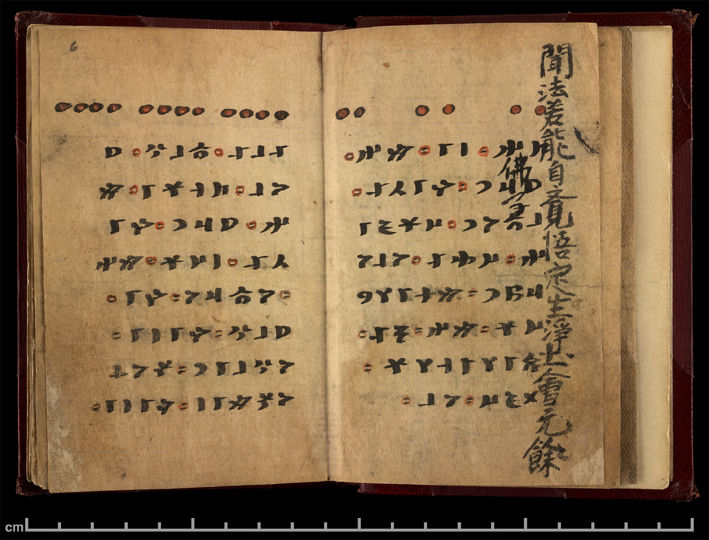
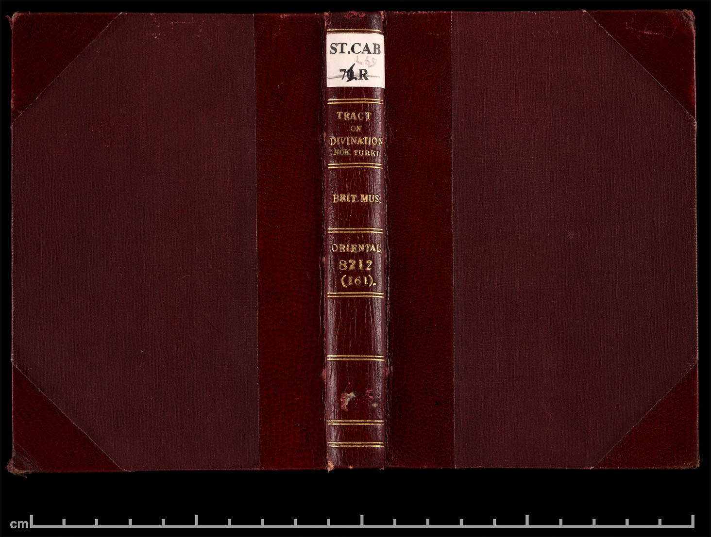

Irk Bitig
Türk dilinin en eski kitaplarından biri olan Irk Bitig kitabının tam sayfa aslı ve metnidir. Bu kitap Göktürk Alfabesi ile Türkçe yazılıdır.
Kitap 10. yüzyılda yazılmıştır, Çin-Gansu vilayetinde Uygur Türkleri'nin yaşadığı bölgedeki bir mağarada 1907 yılında bulunmuştur ve şu an Londra British Müzesinde korunmaktadır.
Kitabın yazarı; "Pars yılının, ikinci ayının on beşinde (17 Mart 930) Taygün-tan manastırındaki küçük keşiş Burua guruyu (hocayı) işitip (dinleyerek) ağabeyimiz sevgili Sangun İtaçuk için bitidim (yazdım)" der.
Mini sözlük: varmak = gitmek, oğlu = yavrusu, sokuşmak = sokunmak yanaşmak, kamşamak = kımıldamak / kıpırdamak, yarın = gündüz, er = erkek, talım = dövüşcü savaşçı, ozmak = es geçmek, kurtulmak
Kitap sağdan sola doğru okunur, sayfalar sağdan başlar.
Irk Bitig Sayfaları

6. (oo oo oo)
𐱅𐰤 : 𐰾𐰃 : 𐰢𐰤 : 𐰖𐰺𐰣 : 𐰚𐰃𐰲𐰀 : 𐰞𐱃𐰆𐰣 : 𐰇𐰼𐰏𐰃𐰤 : 𐰇𐰔𐰀 : 𐰆𐰞𐰆𐰺𐰆𐰯𐰣 : 𐰢𐰭𐰃𐰠𐰘𐰇𐰼 : 𐰢𐰤 : 𐰨𐰀 : 𐰋𐰃𐰠𐰭𐰠𐰼 : 𐰓𐰏𐰇 : 𐰆𐰞
TeN : Sİ : MeN : YaRıN : KİÇE : aLTUN : ÖRGİN : ÜZE : OLURUPaN : MeŊİLeYÜR : MeN : aNÇA : BİLiŊLeR : eDGÜ : OL
TENSİ : (TANRI-OĞLU) : BEN : YARIN(GÜNDÜZ) : GECE : ALTIN : TAHT : ÜZERİNDE : OTURUP : KEYİFLENİR : BEN. : ANCA : BİLİN : İYİ : O.
6/7. (oooo oooo oooo)
𐰀𐰞𐰀 : 𐱃𐰞𐰍 : 𐰖𐰆𐰞 : 𐱅𐰭𐰼𐰃 : 𐰢𐰤 : 𐰖𐰺𐰣 : 𐰚𐰃𐰲𐰀 : 𐰾𐰇𐰼 : 𐰢𐰤 : 𐰆𐱃𐰺𐰆 : 𐰚𐰃 : 𐰖𐰞𐰍 : 𐰚𐰃𐰾𐰃 : 𐰆𐰍𐰞𐰃𐰣 : 𐰽𐰆𐰸𐰆𐰽𐰢𐰃𐰾 : 𐰚𐰃𐰾𐰃 : 𐰴𐰆𐰺𐰴𐰢𐰃𐰾 : 𐰴𐰆𐰺𐰴𐰢𐰀 : 𐱅𐰃𐰢𐰾 : 𐰴𐰆𐱃 : 𐰋𐰃𐰼𐰏𐰘 : 𐰢𐰤 : 𐱅𐰃𐰢𐰃𐰾 : 𐰨𐰀 : 𐰋𐰃𐰠𐰃𐰭 : 𐰓𐰏𐰇 : 𐰆𐰞
ALA : aTLıG : YOL : TeŊRİ : MeN : YaRıN : KİÇE : eŠUR : MeN : UTRU : eKİ : YıLıG : KİŠİ : OGLIN : SOKUŠMIŠ : KİŠİ : KORKMIŠ : KORKMA : TİMiŠ : KUT : BERGeY : MeN : TİMİŠ : aNÇA : BİLİŊ : eDGÜ : OL
ALA : ATLI : YOL : TANRISI : BEN. : YARIN(GÜNDÜZ) : GECE : ESER : BEN. : KARŞIDA : İKİ : YILIK(KİBAR) : KİŞİ : OĞLUNA : SOKUŞMUŞ(YANAŞMIŞ) : KİŞİ : KORKMUŞ : KORKMA : DEMİŞ : KUT : VEREY[İM] : BEN : DEMİŞ. : ANCA : BİLİN : İYİ : O.
7/8. (ooo ooo ooo)
𐰞𐱃𐰆𐰣 : 𐰴𐰣𐱃𐰞𐰍 : 𐱃𐰞𐰢 : 𐰴𐰺𐰀 : 𐰴𐰆𐰽 : 𐰢𐰤 : 𐱃𐰣𐰢 : 𐱅𐰇𐰾𐰃 : 𐱃𐰴𐰃 : 𐱅𐰇𐰚𐰀 : 𐰢𐰔𐰚𐰤 : 𐱃𐰞𐰆𐰖𐰑𐰀 : 𐰖𐱃𐰯𐰣 : 𐱃𐰯𐰞𐰀𐰑𐰆𐰴𐰢𐰃𐰤 : 𐱃𐰆𐱃𐰺 : 𐰢𐰤 : 𐰾𐰋𐰓𐰜𐰢𐰃𐰤 : 𐰘𐰃𐰘𐰇𐰼 : 𐰢𐰤 : 𐰦𐰍 : 𐰚𐰇𐰲𐰠𐰇𐰏 : 𐰢𐰤 : 𐰨𐰀 : 𐰋𐰃𐰠𐰃𐰭𐰠𐰼 : 𐰓𐰏𐰇 : 𐰆𐰞
aLTUN : KaNaTLıG : TaLıM : KaRA : KUŠ : MeN : TaNıM : TÜSİ : TaKI : TÜKE : MeZKeN : TaLUYDA : YaTıPaN : TaPLADUKuMIN : TUTaR : MeN : SeBDÜKüMİN : YİYÜR : MeN : aNTaG : KÜÇLÜG : MeN : aNÇA : BİLİŊLeR : eDGÜ : OL
ALTIN : KANATLI : TALIM(YIRTICI) : KARA : KUŞ(KARTAL) : BEN. : TENİMİN : TÜYÜ : DAHİ : YETİŞMEZKEN : DENİZDE : YATAN[LARDAN] : TAPLADIĞIMI : TUTAR : BEN : SEVDİĞİMİ : YERİM : BEN : ÖYLE : GÜÇLÜ : BEN. : ANCA : BİLİN : İYİ : O.
8/9. (o o o)
𐰇𐰼𐰇𐰭 : 𐰾𐰼𐰃 : 𐱃𐰆𐰍𐰣 : 𐰴𐰆𐰽 : 𐰢𐰤 : 𐰲𐰃𐰣𐱃𐰣 : 𐰃𐰍𐰲 : 𐰇𐰔𐰀 : 𐰆𐰞𐰆𐰺𐰆𐰆𐰯𐰣 : 𐰢𐰭𐰃𐰠𐰘𐰇𐰼 : 𐰢𐰤 : 𐰨𐰀 : 𐰋𐰃𐰠𐰃𐰭𐰠𐰼
ÜRÜŊ : eSRİ : TOGaN : KUŠ : MeN : ÇINTaN : IGaÇ : ÜZE : OLORUPaN : MeŊİLeYÜR : MeN : aNÇA : BİLİŊLeR
ALACA : RENKDE : DOĞAN : KUŞU : BEN. : SANDAL : AĞACI : ÜZERİNE : OTURUP : KEYİFLENİR : BEN. : ANCA : BİLİN..
9/10. (oo oooo oo)
𐰋𐰏 : 𐰼 : 𐰖𐰆𐰣𐱃𐰃𐰭𐰺𐰆 : 𐰉𐰺𐰢𐰃𐰾 : 𐰀𐰴 : 𐰋𐰃𐰾𐰃 : 𐰴𐰆𐰞𐰆𐰣𐰞𐰀𐰢𐰃𐰾 : 𐰞𐱃𐰆𐰣 : 𐱃𐰆𐰖𐰆𐰍𐰞𐰆𐰍 : 𐰑𐰍𐰺𐰞𐰴 : 𐰖𐰺𐰀𐰍𐰖 : 𐱅𐰋𐰀𐰾𐰃𐰭𐰼𐰇 : 𐰉𐰺𐰢𐰃𐰾 : 𐰇𐰼𐰇𐰭 : 𐰃𐰤𐰏𐰤𐰃 : 𐰉𐰆𐱃𐰆𐰞𐰀𐰢𐰃𐰾 : 𐰞𐱃𐰆𐰣 : 𐰉𐰆𐰑𐰞𐰞𐰍 : 𐰉𐰆𐰍𐰺𐰀𐰞𐰴 : 𐰖𐰺𐰀𐰍𐰖 : 𐰋𐰃𐰭𐰼𐰇 : 𐰚𐰠𐰢𐰃𐰾 : 𐰇𐰲𐰇𐰨 : 𐰴𐰆𐰨𐰆𐰖𐰃 : 𐰆𐰺𐰃𐰞𐰣𐰢𐰃𐰾 : 𐰋𐰏𐰠𐰃𐰚 : 𐰖𐰺𐰀𐰍𐰖 : 𐱅𐰃𐰼 : 𐰢𐰭𐰃𐰠𐰃𐰏 : 𐰋𐰏 : 𐰼 : 𐰼𐰢𐰃𐰾 : 𐰪𐰃𐰍 : 𐰓𐰏𐰇 : 𐰆𐰞
BeG : eR : YUNTIŊaRU : BaRMIŠ : AK : BİSİ : KULUNLAMIŠ : aLTUN : TUYUGLUG : aDGıRLıK : YaRAGaY : TeBESİŊeRÜ : BaRMIŠ : ÜRÜŊ : İNGeNÜ : BOTULAMIŠ : aLTUN : BUDLaLıG : BUGRALıK : YaRAGaY : eBİŊeRÜ : KeLMİŠ : ÜÇÜNÇ : KONÇUYI : URILaNMIŠ : BeGLİK : YaRAGaY : TİR : MeŊİLİG : BeG : eR : eRMİŠ : aÑIG : eDGÜ : OL
BEY : ER(ADAM) : ATLARINA : VARMIŞ : AK : KISRAĞI : KULUNLAMIŞ. : ALTIN : DAMGALI : AYGIRLIK : YARAŞIR. : DEVESİNE : VARMIŞ : AK : DEVESİ : YAVRULAMIŞ : ALTIN : BURUNLUKLU : BUĞRALIK : YARAŞIR. : EVİNE : GELMİŞ : ÜÇÜNCÜ : EŞİ : OĞLAN[DOĞURMUŞ] : BEYLİK : YARAŞIR : DER. : MUTLU : BEY : ER : İMİŞ. : ÇOK : İYİ : O.
10/11. (oo oo o)
𐰑𐰍𐰞𐰃 : 𐱃𐰆𐰭𐰆𐰔𐰞𐰃 : 𐰀𐰺𐱃 : 𐰇𐰔𐰀 : 𐰽𐰆𐰸𐰽𐰢𐰃𐰾 : 𐰼𐰢𐰃𐰾 : 𐰑𐰍𐰭 : 𐰴𐰺𐰣𐰃 : 𐰖𐰺𐰞𐰢𐰆𐰾 : 𐱃𐰆𐰭𐰆𐰔𐰆𐰭 : 𐰔𐰃𐰍𐰃 : 𐰽𐰃𐰣𐰢𐰃𐰾 : 𐱅𐰃𐰼 : 𐰨𐰀 : 𐰋𐰃𐰠𐰃𐰭 : 𐰖𐰉𐰞𐰴 : 𐰆𐰞
aDıGLI : TOŊUZLI : ART : ÜZE : SOKUŠMIŠ : eRMİŠ : aDıGıŊ : KaRNI : YaRıLMıŠ : TOŊUZUŊ : aZIGI : SINMIŠ : TİR : aNÇA : BİLİŊ : YaBLaK : OL
AYILI-DOMUZLU : (AYI : İLE : DOMUZ) : BİR : GEÇİT : ÜZERİNDE : SOKUŞMUŞ. : AYININ : KARNI : YARILMIŞ : DOMUZUN : AZI : DİŞLERİ : SINMIŞ : (KIRILMIŞ) : DER. : ANCA : BİLİN : KÖTÜ : O.
11. (oo o oo)
𐰼 : 𐱅𐰼𐰚𐰠𐰘𐰇 : 𐰚𐰠𐰃𐰼 : 𐰓𐰏𐰇 : 𐰾𐰇𐰔 : 𐰽𐰉 : 𐰠𐱅𐰃 : 𐰚𐰠𐰃𐰼 : 𐱅𐰃𐰼 : 𐰨𐰀 : 𐰋𐰃𐰠𐰃𐰭𐰠𐰼 : 𐰓𐰏𐰇 : 𐰆𐰞
ER : TeRKLeYÜ : KeLİR : eDGÜ : SÖZ : SaB : eLTİ : KeLİR : TİR : aNÇA : BİLİŊLeR : eDGÜ : OL
ER : (ADAM) : KOŞAGELİR : İYİ : SÖZ-SAV : ALDI : GELİR : DER. : ANCA : BİLİN : İYİ : O.
11/12. (ooo oo o)
𐰞𐱃𐰆𐰣 : 𐰉𐰽𐰞𐰍 : 𐰖𐰃𐰞𐰣 : 𐰢𐰤 : 𐰞𐱃𐰆𐰣 : 𐰴𐰆𐰺𐰆𐰍𐰽𐰴𐰢𐰃𐰤 : 𐰴𐰃𐰞𐰲𐰃𐰣 : 𐰚𐰾𐰃𐰯𐰤 : 𐰇𐰔𐰇𐰢 : 𐰖𐰆𐰞 : 𐰃𐰤𐱅𐰃𐰤 : 𐰉𐰽𐰢𐰃𐰣 : 𐰖𐰆𐰞 : 𐰋𐰃𐰤𐱅𐰤 : 𐱅𐰃𐰼 : 𐰨𐰀 : 𐰋𐰃𐰠𐰃𐰭𐰠𐰼 : 𐰖𐰉𐰞𐰴 : 𐰆𐰞
aLTUN : BaŠLıG : YILaN : MeN : aLTUN : KURUGSaKıMIN : KILıÇIN : KeSİPeN : ÖZÜMİN : YOL : İNTİN : BaŠıMIN : YOL : eBİNTiN : TİR : aNÇA : BİLİŊLeR : YaBLaK : OL
ALTIN : BAŞLI : YILAN : BEN. : ALTIN : KURSAĞIMI : KILIÇLA : KESİP : ÖZÜMÜ : YOL : (KOPAR/ÇIKAR) : İNİMDEN : BAŞIMI : YOL : (KOPAR) : BEDENİMDEN : DER. : ANCA : BİLİN : KÖTÜ : O.
12. (o oo ooo)
𐰆𐰞𐰆𐰍 : 𐰋 : 𐰇𐰼𐱅𐰤𐰢𐰃𐰾 : 𐰴𐱃𐰃𐰭𐰀 : 𐱅𐰏𐰃 : 𐰴𐰞𐰢𐰑𐰸 : 𐰋𐰇𐰜𐰃𐰭𐰀 : 𐱅𐰏𐰃 : 𐰴𐰆𐰑𐰢𐰸 : 𐱅𐰃𐰼 : 𐰨𐰀 : 𐰋𐰃𐰠𐰃𐰭𐰠𐰼 : 𐰖𐰉𐰞𐰴 : 𐰆𐰞
ULUG : eB : ÖRTaNMİŠ : KaTIŊA : TeGİ : KaLMaDUK : BÜKİŊE : TeGİ : KODMaDUK : TİR : aNÇA : BİLİŊLeR : YaBLaK : OL
ULU : EV : YANMIŞ. : KATINA : DEĞİN : KALMADIK : KÖŞESİNE : DEĞİN : KOYMADIK : (TAMAMI YANMIŞ) : DER. : ANCA : BİLİN : KÖTÜ : O.
13. (ooo oooo oo)
𐰾𐰤𐰏𐰤 : 𐰉𐰺𐰽 : 𐰢𐰤 : 𐰴𐰢𐰆𐰽 : 𐰀𐰺𐰀 : 𐰉𐰽𐰢 : 𐰦𐰍 : 𐰞𐰯 : 𐰢𐰤 : 𐰼𐰓𐰢𐰠𐰃𐰏 : 𐰢𐰤 : 𐰨𐰀 : 𐰋𐰃𐰠𐰃𐰭𐰠𐰼
eSNeGeN : BaRS : MeN : KaMUŠ : ARA : BaŠıM : aNTaG : aLP : MeN : eRDeMLİG : MeN : aNÇA : BİLİŊLeR
ESNEYEN : PARS : BEN. : KAMIŞLAR : ARASINDA : BAŞIM. : ÖYLE : ALP : BEN : ERDEMLİ : BEN. : ANCA : BİLİN..
13. (ooo oooo oooo)
𐰽𐰺𐰍 : 𐱃𐰞𐰍 : 𐰽𐰉𐰲𐰃 : 𐰖𐰔𐰍 : 𐱃𐰞𐰍 : 𐰖𐰞𐰉𐰲 : 𐰓𐰏𐰇 : 𐰾𐰇𐰔 : 𐰽𐰉 : 𐰠𐱅𐰃 : 𐰚𐰠𐰃𐰼 : 𐱅𐰃𐰼 : 𐰨𐰀 : 𐰋𐰃𐰠𐰃𐰭 : 𐰪𐰃𐰍 : 𐰓𐰏𐰇 : 𐰆𐰞
SaRıG : aTLıG : SaBÇI : YaZıG : aTLıG : YaLaBaÇ : eDGÜ : SÖZ : SaB : eLTİ : KeLİR : TİR : aNÇA : BİLİŊ : aÑIG : eDGÜ : OL
SARI : ATLI : SAVCI : (SÖZCÜ) : KOYU : ATLI : YALAVAÇ : (ELÇİ) : İYİ : SÖZ : GETİRİR : DER. : ANCA : BİLİN : ÇOK : İYİ : O.
14. (ooo oooo ooo)
𐰼 : 𐰉𐰴𐰀 : 𐰉𐰺𐰢𐰃𐰾 : 𐱃𐰍𐰑𐰀 : 𐰴𐰢𐰞𐰢𐰞𐰾 : 𐱅𐰭𐰼𐰃𐰓𐰀 : 𐰼𐰚𐰠𐰏 : 𐱅𐰃𐰼 : 𐰨𐰀 : 𐰋𐰃𐰠𐰃𐰭𐰠𐰼 : 𐰖𐰉𐰔 : 𐰆𐰞
ER : AVKA : BARMIS : TAGDA : KAMILMIS : TEŊRİDE : ERKLİG : TİR : ANÇA : BİLİŊLER : YABIZ : OL
ER : (ADAM) : AVA : VARMIŞ : (GİTMİŞ). : DAĞDA : DÜŞMÜŞ : TANRIDA : ERKLİK : (KUDRET)! : DER. : ANCA : BİLİN : YAVUZ : (ÇETİN/KÖTÜ) : O.
14/15. (oo oooo ooo)
𐱅𐰭𐰼𐰃𐰠𐰃𐰏 : 𐰴𐰆𐰺𐱃𐰍𐰀 : 𐰖𐰆𐰺𐱃𐰀 : 𐰴𐰞𐰢𐰃𐰾 : 𐰖𐰍𐰞𐰍 : 𐰴𐰢𐰃𐰲 : 𐰉𐰆𐰞𐰆𐰯𐰣 : 𐰖𐰞𐰍𐰖𐰆 : 𐱅𐰃𐰼𐰃𐰠𐰢𐰃𐰾 : 𐰇𐰠𐰇𐰢𐰓𐰀 : 𐰆𐰔𐰢𐰃𐰾 : 𐱅𐰃𐰼 : 𐰨𐰀 : 𐰋𐰃𐰠𐰃𐰭𐰠𐰼
TeŊRİLİG : KURTGA : YURTA : KaLMIŠ : YaGLıG : KaMIÇ : BULUPaN : YaLGaYU : TİRİLMİŠ : ÖLÜMDE : OZMIŠ : TİR : aNÇA : BİLİŊLeR
TANRILIK : (DİNDAR KADIN) : YURTTA : (ÇADIRDA) : KALMIŞ. : YAĞLI : KAŞIK : BULUP : YALAYIP : DİRİLMİŞ : ÖLÜMDEN : OZMUŞ : (KURTULMUŞ) : DER. : ANCA : BİLİN..
15. (oooo ooo oo)
𐰴𐰆𐰔𐰍𐰆𐰣𐰆𐰍 : 𐰃𐰍𐰲𐰴𐰀 : 𐰉𐰀𐰢𐰃𐰾 : 𐰴𐱃𐰍𐱃𐰃 : 𐰉𐰀 : 𐰓𐰏𐰇𐱅𐰃 : 𐰉𐰀 : 𐱅𐰃𐰼 : 𐰨𐰀 : 𐰋𐰃𐰠𐰃𐰭𐰠𐰼
KUZGUNUG : IGaÇKA : BAMIŠ : KaTıGTI : BA : eDGÜTİ : BA : TİR : aNÇA : BİLİŊLeR
KUZGUNU : AĞACA : BAĞLAMIŞ. : KATICA (SIKI) : BAĞLA : İYİCE : BAĞLA : DER. : ANCA : BİLİN..
15/16. (o oooo o)
𐰇𐰔𐰀 : 𐱃𐰆𐰢𐰣 : 𐱃𐰆𐰺𐰑𐰃 : 𐰽𐰺𐰀 : 𐱃𐰆𐰔 : 𐱃𐰆𐰺𐰑𐰃 : 𐰴𐰆𐰽 : 𐰆𐰍𐰃 : 𐰆𐰲𐰀 : 𐰀𐰔𐱃𐰃 : 𐰚𐰃𐰘𐰃𐰚 : 𐰆𐰍𐰞𐰃 : 𐰘𐰇𐰏𐰇𐰼𐰇 : 𐰀𐰔𐱃𐰃 : 𐰚𐰃𐰾𐰃 : 𐰆𐰍𐰞𐰃 : 𐰖𐰆𐰺𐰃𐰖𐰆 : 𐰀𐰔𐱃𐰃 : 𐰖𐰣𐰀 : 𐱅𐰭𐰼𐰃 : 𐰴𐰆𐱃𐰃𐰣𐱃𐰀 : 𐰇𐰲𐰇𐰨 : 𐰖𐰃𐰞𐱃𐰀 : 𐰴𐰆𐰯 : 𐰾𐰤 : 𐱅𐰇𐰚𐰠 : 𐰚𐰇𐰼𐰇𐰾𐰢𐰾 : 𐰴𐰆𐰯 : 𐰇𐰏𐰃𐰼𐰼 : 𐰾𐰋𐰃𐰤𐰇𐰼 : 𐱅𐰃𐰼 : 𐰨𐰀 : 𐰋𐰃𐰠𐰃𐰭𐰠𐰼 : 𐰓𐰏𐰇 : 𐰆𐰞
ÜZE : TUMaN : TURDI : aSRA : TOZ : TURDI : KUŠ : OGLI : UÇA : AZTI : KİYİK : OGLI : YÜGÜRÜ : AZTI : KİŠİ : OGLI : YORIYU : AZTI : YaNA : TeŊRİ : KUTINTA : ÜÇÜNÇ : YILTA : KOP : eSeN : TÜKeL : KÖRÜŠMiŠ : KOP : ÖGİReR : SeBİNÜR : TİR : aNÇA : BİLİŊLeR : eDGÜ : OL
ÜSTE : DUMAN : (SİS) : DURDU : ALTTA : TOZ : DURDU. : KUŞ : OĞLU : (YAVRUSU) : UÇUP : AZMIŞ : (YOLUNU : KAYBETMİŞ) : GEYİK : OĞLU : KOŞUP : AZMIŞ : KİŞİ : OĞLU : YÜRÜYÜP : AZMIŞ. : YİNE : TANRI : KUTUNDA : ÜÇÜNCÜ : YILDA : HEPSİ : ESEN : (SAĞ-SALİM) : GÖRÜŞMÜŞ. : HEPSİ : ÖVÜNÜR : SEVİNİR : DER. : ANCA : BİLİN : İYİ : O.
17. (oooo o oo)
𐱃𐰆𐰺𐰸 : 𐱃 : 𐰾𐰢𐰼𐰃𐱅𐰃 : 𐰘𐰃𐰼𐰃𐰤 : 𐰇𐰯𐰤 : 𐰘𐰇𐰏𐰇𐰼𐰇 : 𐰉𐰺𐰢𐰃𐰾 : 𐰆𐱃𐰺𐰆 : 𐰘𐰃𐰼𐰓𐰀 : 𐰆𐰍𐰺𐰃 : 𐰽𐰆𐰸𐰆𐰽𐰆𐰯 : 𐱃𐰆𐱃𐰆𐰆𐰯𐰣 : 𐰢𐰃𐰤𐰢𐰃𐰾 : 𐰘𐰃𐰠𐰃𐰭𐰀 : 𐰴𐰆𐰑𐰆𐰺𐰽𐰆𐰍𐰃𐰭𐰣𐰃𐰭𐰀 : 𐱅𐰏𐰃 : 𐰖𐰍𐰺𐰃𐰯𐰣 : 𐰴𐰢𐰽𐰖𐰆 : 𐰆𐰢𐰀𐱃𐰃𐰣 : 𐱃𐰆𐰺𐰆𐰺 : 𐱅𐰃𐰼 : 𐰨𐰀 : 𐰋𐰃𐰠𐰃𐰭 : 𐰖𐰉𐰞𐰴 : 𐰆𐰞
TORUK : aT : SeMRİTİ : YERİN : ÖPeN : YÜGÜRÜ : BaRMIŠ : OTRU : YERDE : OGRI : SOKUŠUP : TUTUPAN : MİNMİŠ : YİLİŊE : KUDURSUGIŊNIŊA : TeGİ : YaGRIPaN : KaMŠaYU : UMATIN : TURUR : TİR : aNÇA : BİLİŊ : YaBLaK : OL
DORUK : (ZAYIF) : AT : SEMİZ : YER : DÜŞLEYİP : YÜĞÜRÜ : (KOŞA) : VARMIŞ. : KARŞI : YERDE : HIRSIZ : SOKUNUP : TUTUP : BİNMİŞ. : YELESİNDEN : KUYRUĞUNA : DEĞİN : YARALANIP : KIMILDAYAMADAN : DURUR : DER. : ANCA : BİLİN : KÖTÜ : O.
18. (ooo ooo oo)
𐰇𐰔𐰠𐰜 : 𐱃 : 𐰇𐰭 : 𐰘𐰃𐰼𐰓𐰀 : 𐰺𐰯 : 𐰆𐰭𐰆𐰆𐰯 : 𐱃𐰆𐰺𐰆 : 𐰴𐰞𐰢𐰃𐰾 : 𐱅𐰭𐰼𐰃 : 𐰚𐰇𐰲𐰃𐰭𐰀 : 𐱃𐰍 : 𐰇𐰔𐰀 : 𐰖𐰆𐰞 : 𐰽𐰆𐰉 : 𐰆𐰇𐰼𐰇𐰯𐰤 : 𐰘𐰃𐰾 : 𐰇𐰔𐰀 : 𐰖𐰽 : 𐰆𐱃 : 𐰚𐰇𐰼𐰇𐰯𐰤 : 𐰖𐰆𐰺𐰃𐰖𐰆 : 𐰉𐰺𐰃𐰯𐰣 : 𐰽𐰆𐰉 : 𐰃𐰲𐰃𐰯𐰤 : 𐰖𐰀𐰽 : 𐰘𐰃𐰯𐰤 : 𐰇𐰠𐰇𐰢𐰓𐰀 : 𐰆𐰔𐰢𐰃𐰾 : 𐱅𐰃𐰼 : 𐰨𐰀 : 𐰋𐰃𐰠𐰃𐰭𐰠𐰼 : 𐰓𐰏𐰇 : 𐰆𐰞
ÖZLÜK : aT : ÖŊ : YERDE : aRıP : OŊUP : TURU : KaLMIŠ : TeŊRİ : KÜÇİŊE : TaG : ÜZE : YOL : SUB : KÖRÜPeN : YİŠ : ÜZE : YaŠ : OT : KÖRÜPeN : YORIYU : BaRIPaN : SUB : İÇİPeN : YAŠ : YİPeN : ÖLÜMDE : OZMIŠ : TİR : aNÇA : BİLİŊLeR : eDGÜ : OL
ÖZLÜK : (BİNEK) : AT : KURAK : YERDE : ARIP : (ARGIN-YORGUN) : DURAKALMIŞ. : TANRI : GÜCÜYLE : DAĞ : ÜZERİNDE : YOL : SU : GÖRÜP : BAYIR : ÜZERİNDE : YAŞ : OT : GÖRÜP : YÜRÜYE : VARIP : SU : İÇİP : YAŞ : [OT] : YİYİP : ÖLÜMDEN : OZMUŞ : DER. : ANCA : BİLİN : İYİ : O.
19. (o oooo oo)
𐰚𐰼𐰀𐰚𐰇 : 𐰃𐰲𐰃 : 𐰤𐰀 : 𐱅𐰏 : 𐰆𐰞 : 𐱅𐰇𐰏𐰇𐰤𐰜𐰃 : 𐰤𐰀 : 𐱅𐰏 : 𐰆𐰞 : 𐰚𐰇𐰔𐰤𐰜𐰚𐰃 : 𐰤𐰀 : 𐱅𐰏 : 𐰚𐰇𐰼𐰜𐰠𐰇𐰏 : 𐰆𐰞 : 𐰏𐰤𐰃 : 𐰤𐱅𐰏 : 𐰤𐱅𐰏 : 𐰓𐰏𐰇 : 𐰆𐰞 : 𐰉𐰍𐰽𐰃 : 𐰤𐰀 : 𐱅𐰏 : 𐰉𐰺 : 𐰆𐰞 : 𐱅𐰃𐰼 : 𐰨𐰀 : 𐰋𐰃𐰠𐰃𐰭𐰠𐰼 : 𐰪𐰃𐰍 : 𐰓𐰏𐰇 : 𐰆𐰞
KeREKÜ : İÇİ : NE : TeG : OL : TÜGÜNÜKİ : NE : TeG : OL : KÖZNÜKİ : NE : TeG : KÖRÜKLÜG : OL : eGNİ : NeTeG : NeTeG : eDGÜ : OL : BaGıŠI : NE : TeG : BaR : OL : TİR : aNÇA : BİLİŊLeR : aÑIG : eDGÜ : OL
ÇADIRIN : İÇİ : NE : GİBİDİR? : TÜYNÜĞÜ : (BACASI) : NE : GİBİ? : PENCERESİ : NE : DE : GÖRKEMLİ. : ÇATISI : NE : DE : İYİ : BAĞIŞI : (İPLERİ) : NE : DE : VAR : DER. : ANCA : BİLİN : ÇOK : İYİ : O.
19/20. (ooo o oooo)
𐰀𐰴 : 𐱃 : 𐰴𐰺𐰽𐰽𐰃𐰣 : 𐰇𐰲 : 𐰉𐰆𐰞𐰆𐰍𐱃𐰀 : 𐱃𐰞𐰆𐰞𐰀𐰯𐰣 : 𐰍𐰣𐰴𐰀 : 𐰇𐱅𐰇𐰏𐰚𐰀 : 𐰃𐰑𐰢𐰃𐰾 : 𐱅𐰃𐰼 : 𐰴𐰆𐰺𐰴𐰢𐰀 : 𐰓𐰏𐰇𐱅𐰃 : 𐰇𐱅𐰇𐰤 : 𐰖𐰃𐰣𐰢𐰀 : 𐰓𐰏𐰇𐱅𐰃 : 𐰖𐰞𐰉𐰺 : 𐱅𐰃𐰼 : 𐰨 : 𐰋𐰃𐰠𐰃𐰭 : 𐰓𐰏𐰇 : 𐰆𐰞
AK : aT : KaRŠıSIN : ÜÇ : BULUGTA : TaLULAPaN : aGıNKA : ÖTÜGKE : IDMIŠ : TİR : KORKMA : eDGÜTİ : ÖTÜN : aYINMA : eDGÜTİ : YaLBaR : TİR : aNÇ(a) : BİLİŊ : eDGÜ : OL
AK : AT : KARŞISINI : (RAKİBİNİ) : ÜÇ : AŞAMADA : SEÇMİŞ : DUAYA : BAŞLAMIŞ : DER. : KORKMA : İYİCE : ÖTÜN : (ANLAT) : AYINMA : (ÇEKİNME) : İYİCE : YALVAR : DER. : ANCA : BİLİN : İYİ : O.
20/21. (ooo oo oo)
𐱅𐰃𐱅𐰃𐰼 : 𐰉𐰆𐰍𐰺𐰀 : 𐰢𐰤 : 𐰇𐰼𐰇𐰭 : 𐰚𐰇𐰯𐰇𐰚𐰇𐰢𐰃𐰤 : 𐰽𐰲𐰺 : 𐰢𐰤 : 𐰇𐰔𐰀 : 𐱅𐰭𐰼𐰃𐰚𐰀 : 𐱅𐰏𐰃𐰼 : 𐰽𐰺𐰀 : 𐰘𐰃𐰼𐰚𐰀 : 𐰚𐰃𐰼𐰇𐰼 : 𐱅𐰃𐰼 : 𐰆𐰑𐰃𐰍𐰢𐰍 : 𐰆𐰑𐰍𐰆𐰺 : 𐰖𐱃𐰍𐰞𐰃𐰍 : 𐱃𐰆𐰺𐰍𐰺𐰆 : 𐰖𐰆𐰺𐰃𐰖𐰆𐰺 : 𐰢𐰤 : 𐰦𐰍 : 𐰚𐰇𐰲𐰠𐰇𐰏 : 𐰢𐰤 : 𐰨𐰀 : 𐰋𐰃𐰠𐰃𐰭𐰠𐰼 : 𐰓𐰏𐰇 : 𐰆𐰞
TİTİR : BUGRA : MeN : ÜRÜŊ : KÖPÜKÜMİN : SaÇaR : MeN : ÜZE : TeŊRİKE : TeGİR : aSRA : YERKE : KİRÜR : TİR : UDIGMaG : ODGURU : YaTıGLIG : TURGuRU : YORIYUR : MeN : aNTaG : KÜÇLÜG : MeN : aNÇA : BİLİŊLeR : eDGÜ : OL
ERKEK : DEVE : BEN. : AK : KÖPÜĞÜMÜ : SAÇAR : BEN. : ÜSTTE : TANRIYA : (GÖĞE) : DEĞER : ALTTA : YERE : GİRER[İM] : DER. : UYUYANI : UYANDIRA-UYANDIRA : YATANI : KALDIRA-KALDIRA : YÜRÜYOR : (YAŞIYOR) : BEN. : ÖYLE : GÜÇLÜ : BEN. : ANCA : BİLİN : İYİ : O.
21/22. (o ooo ooo)
𐰴𐰺𐰃 : 𐰇𐰯𐰏𐰇𐰚 : 𐰖𐰃𐰞 : 𐰖𐰺𐰆𐰢𐰔𐰴𐰣 : 𐱅𐰓𐰃 : 𐰇𐰓𐰢𐰭 : 𐰚𐰇𐰼𐰢𐰭 : 𐰇𐰼𐰚𐱅𐱅𐰭 : 𐱅𐰃𐰼 : 𐰨𐰀 : 𐰋𐰃𐰠𐰭
KaRI : ÜPGÜK : YIL : YaRUMaZKaN : eTDİ : ÜDMeŊ : KÖRMeŊ : ÜRKüT(m)eŊ : TİR : aNÇA : BİLİŊ
YAŞLI : ÇAVUŞKUŞU : YIL : GİRMEDEN : (ZAMANSIZ) : ÖTTÜ. : İLGİLENMEYİN : GÖRMEYİN : ÜRKÜTMEYİN : DER. : ANCA : BİLİN..
22. (oo o o)
𐰆𐰔𐰆𐰣𐱃𐰆𐰣𐰞𐰆𐰍 : 𐰚𐰇𐰔𐰭𐰇𐰾𐰃𐰤 : 𐰚𐰇𐰠𐰚𐰀 : 𐰃𐰲𐰍𐰣𐰢𐰃𐰾 : 𐰖𐰺𐰣 : 𐰖𐰭𐰺𐰀𐰖𐰆𐰺 : 𐰚𐰃𐰲𐰀 : 𐰚𐰭𐰼𐰀𐰤𐰇𐰼 : 𐱅𐰃𐰼 : 𐰨𐰀 : 𐰋𐰃𐰠𐰃𐰭𐰠𐰼 : 𐰢𐰆𐰭𐰞𐰆𐰍 : 𐰆𐰞 : 𐰪𐰃𐰍 : 𐰖𐰉𐰞𐰴 : 𐰆𐰞
UZUNTONLUG : KÜZŊÜSİN : KÖLKE : IÇGıNMIŠ : YaRıN : YaŊRAYUR : KEÇE : KeŊRENÜR : TİR : aNÇA : BİLİŊLeR : MUŊLUG : OL : aÑIG : YaBLaK : OL
UZUNDONLU : (KADIN) : AYNASINI : GÖLE : DÜŞÜRMÜŞ. : YARIN : (GÜNDÜZ) : MIRILDANIR : GECE : SIZLANIR : DER. : ANCA : BİLİN : KEDERLİ : O : ÇOK : KÖTÜ : O.
23. (oo oooo oooo)
𐰆𐰍𐰞𐰣 : 𐰚𐰚𐰜 : 𐱅𐰔𐰚𐰃𐰤 : 𐰉𐰆𐰞𐱃𐰃 : 𐰲𐰆𐰚 : 𐱅𐰃𐰭 : 𐰴𐰆𐱃𐰞𐰆𐰍 : 𐰉𐰆𐰞𐰔𐰆𐰣 : 𐱅𐰃𐰼 : 𐰨𐰀 : 𐰋𐰃𐰠𐰃𐰭𐰠𐰼 : 𐰓𐰏𐰇 : 𐰆𐰞
OGLaN : KeKÜK : TeZeKİN : BULTI : Çe(k)iK : eTİŊ : KUTLUG : BOLZUN : TİR : aNÇA : BİLİŊLeR : eDGÜ : OL
OĞLAN : KARTAL : TEZEĞİNİ : BULDU. : ÇEKİK[KUŞU] : ETİN : KUTLU : OLSUN : DER. : ANCA : BİLİN : İYİ : O.
23/24. (ooo o ooo)
𐱅𐰏𐰠𐰜 : 𐰴𐰆𐰞𐰆𐰣 : 𐰃𐰼𐰚𐰚 : 𐰖𐰆𐰦𐰀 : 𐰢𐰃𐰏 : 𐱅𐰃𐰠𐰀𐰘𐰇𐰼 : 𐰚𐰇𐰤 : 𐰆𐰺𐱃𐰆 : 𐰘𐰇𐱅𐰇𐰼𐰆𐰯 : 𐱅𐰇𐰤 : 𐰆𐰺𐱃𐰆 : 𐰴𐰣𐱃𐰀 : 𐰤𐰏𐰇𐰓𐰀 : 𐰉𐰆𐰞𐰍𐰖 : 𐰆𐰞 : 𐱃𐰃𐰼 : 𐰨𐰀 : 𐰋𐰃𐰠𐰭𐰠𐰼 : 𐰖𐰉𐰔 : 𐰆𐰞
TeGLÖK : KULUN : İRKeK : YUNTA : eMİG : TİLEYÜR : KÜN : ORTU : YÜTÜRÜP : TÜN : ORTU : KaNTA : NeGÜDE : BULGaY : OL : TİR : aNÇA : BİLiŊLeR : YaBıZ : OL
KÖR : KULUN : (TAY) : ERKEK : ATI : EMMEYİ : DİLER : GÜN : ORTASI : (ANASINI) : YİTİRİP : DÜN : (GECE) : ORTASI : NE : DEK : (NASIL) : BULACAK : O? : DER. : ANCA : BİLİN : YAVUZ : (ÇETİN/KÖTÜ) : O.
24. (ooo o ooo)
𐰚𐰃 : 𐰇𐰚𐰇𐰔𐰇𐰏 : 𐰋𐰃𐰼 : 𐰉𐰆𐰴𐰺𐰽𐰃𐰴𐰀 : 𐰚𐰇𐰠𐰢𐰾 : 𐰴𐰢𐰾𐰖𐰆 : 𐰆𐰢𐰀𐱃𐰃𐰣 : 𐱃𐰆𐰺𐰆𐰺 : 𐱅𐰃𐰼 : 𐰨𐰀 : 𐰋𐰃𐰠𐰃𐰭 : 𐰖𐰉𐰞𐰴 : 𐰞𐰆
eKİ : ÖKÜZÜG : BİR : BOKuRSIKA : KÖLMiŠ : KaMŠaYU : UMATIN : TURUR : TİR : aNÇA : BİLİŊ : YaBLaK : OL
İKİ : ÖKÜZÜ : BİR : SABANA : KOŞMUŞ. : KIMILDAYAMADAN : DURUR : DER. : ANCA : BİLİN : KÖTÜ : O.
24/25. (o oo oooo)
𐱃𐰭 : 𐱃𐰭𐰞𐰺𐰑𐰃 : 𐰆𐰑𐰆 : 𐰘𐰃𐰼 : 𐰖𐰺𐰆𐰑𐰃 : 𐰆𐰑𐰆 : 𐰚𐰇𐰤 : 𐱃𐰆𐰍𐰑𐰃 : 𐰴𐰢𐰍 : 𐰇𐰔𐰀 : 𐰖𐰺𐰸 : 𐰉𐰆𐰞𐱃𐰃 : 𐱅𐰃𐰼 : 𐰨𐰀 : 𐰋𐰃𐰠𐰃𐰭 : 𐰓𐰏𐰇 : 𐰆𐰞
TaŊ : TaŊLaRDI : UDU : YİR : YaRUDI : UDU : KÜN : TUGDI : KaMaG : ÜZE : YaRUK : BOLTI : TİR : aNÇA : BİLİŊ : eDGÜ : OL
TAN : TANLADI : UYUYAN : YER : PARLADI : UYUYAN : GÜN : DOĞDU : HERŞEYİN : ÜZERİ : PARLAK : OLDU : DER. : ANCA : BİLİN : İYİ : O.
25. (oo oo oooo)
𐰉𐰖 : 𐰼 : 𐰴𐰆𐰪𐰃 : 𐰇𐰼𐰚𐰇𐰯𐰤 : 𐰉𐰺𐰢𐰃𐰾 : 𐰋𐰇𐰼𐰃𐰚𐰀 : 𐰽𐰆𐰸𐰆𐰽𐰢𐰃𐰾 : 𐰋𐰇𐰼𐰃 : 𐰍𐰔𐰃 : 𐰢𐰾𐰃𐰢𐰃𐰾 : 𐰾𐰤 : 𐱅𐰇𐰜𐰠 : 𐰉𐰆𐰞𐰢𐰢𐰃𐰾 : 𐱅𐰃𐰼 : 𐰨𐰀 : 𐰋𐰃𐰠𐰃𐰭𐰠𐰼 : 𐰓𐰏𐰇 : 𐰆𐰞
BaY : eR : KOÑI : ÜRKÜPeN : BaRMİŠ : BÖRİKE : SOKUŠMIŠ : BÖRİ : aGZI : eMSİMİŠ : eSeN : TÜKeL : BOLMMIŠ : TİR : aNÇA : BİLİŊLeR : eDGÜ : OL
BAY : ER (ZENGİN ADAM) : KOYUNU : ÜRKÜP : VARMIŞ : (KAÇMIŞ). : BÖRÜYE : (KURTA) : SOKUŞMUŞ. : BÖRÜ : AĞZI : ACIMIŞ : ESEN : (SAĞ-SALİM) : OLMUŞ : (KURTULMUŞ) : DER. : ANCA : BİLİN : İYİ : O.
26. (o o oo)
𐰴𐰣 : 𐰆𐰞𐰆𐰺𐰆𐰯𐰣 : 𐰆𐰺𐰑𐰆 : 𐰖𐰯𐰢𐰃𐰾 : 𐰃𐰠𐰃 : 𐱃𐰆𐰺𐰢𐰃𐰾 : 𐱅𐰇𐰼𐱅 : 𐰉𐰆𐰞𐰆𐰭𐱃𐰴𐰃 : 𐰓𐰏𐰇𐰾𐰃 : 𐰆𐰖𐰆𐰺𐰃 : 𐱅𐰃𐰼𐰃𐰠𐰃𐰯𐰤 : 𐰢𐰭𐰃𐰠𐰘𐰇𐰼 : 𐰋𐰓𐰃𐰔𐰠𐰘𐰇𐰼 : 𐱅𐰃𐰼 : 𐰨𐰀 : 𐰋𐰃𐰠𐰃𐰭𐰠𐰼 : 𐰓𐰏𐰇 : 𐰆𐰞
KaN : OLORUPaN : ORDU : YaPMIŠ : İLİ : TURMIŠ : TÖRT : BULUŊTaKI : eDGÜSİ : UYURI : TİRİLİPeN : MeŊİLeYÜR : BeDİZLeYÜR : TİR : aNÇA : BİLİŊLeR : eDGÜ : OL
HAN : [TAHTA] : OTURUP : ORDU : YAPMIŞ : (DEVLET : KURMUŞ). : ELİ : (HALKI) : DURUP : DÖRT : YANDAN : İYİSİ : BAŞARILISI : DİRİLİP : (TOPLANIP) : EĞLENİR : BEZENİR : DER. : ANCA : BİLİN : İYİ : O.
27/28. (oo ooo oooo)
𐰆𐰖𐰢𐰀 : 𐰼 : 𐰆𐰍𐰞𐰣𐰃𐰣 : 𐰚𐰃𐰾𐰃𐰾𐰃𐰤 : 𐱃𐰆𐱃𐰆𐰍 : 𐰆𐰺𐰆𐰯𐰣 : 𐰆𐰽𐰃𐰲 : 𐰆𐰖𐰍𐰀𐰞𐰃 : 𐰉𐰺𐰢𐰃𐰾 : 𐰆𐰍𐰞𐰃𐰣 : 𐰴𐰃𐰾𐰃𐰾𐰃𐰤 : 𐰆𐱃𐰆𐰔𐰢𐰑𐰸 : 𐰖𐰣𐰀 : 𐱃𐰆𐰸𐰆𐰔𐰆𐰣 : 𐰉𐰆𐰽 : 𐰴𐰆𐰪 : 𐰆𐱃𐰢𐰃𐰾 : 𐰆𐰍𐰞𐰃 : 𐰖𐰆𐱃𐰆𐰔𐰃 : 𐰴𐰆𐰯 : 𐰇𐰏𐰃𐰼𐰼 : 𐱅𐰃𐰼 : 𐰨𐰀 : 𐰋𐰃𐰠𐰃𐰭𐰠𐰼 : 𐰓𐰏𐰇 : 𐰆𐰞
OYMA : eR : OGLaNIN : KİŠİSİN : TUTUG : URUPaN : OŠİÇ : OYGALI : BaRMIŠ : OGLIN : KİŠİSİN : UTUZMaDOK : YaNA : TOKUZON : BOŠ : KOÑ : UTMIŠ : OGLI : YOTUZI : KOP : ÖGİReR : TİR : aNÇA : BİLİŊLeR : eDGÜ : OL
OYMA[CI] : ER : OĞLUNU : AİLESİNİ : TUTUK : VURUP : (KAPAYIP?) : [KOYUNUN] : İÇİNİ : OYMAYA : VARMIŞ. : OĞLU : AİLESİ : ZARAR : GÖRMEMİŞ : DÖNÜNCE : DOKSAN : [BAŞI]BOŞ : KOYUN : BULMUŞ. : OĞLU : EŞİ : HEP : ÖVÜNÜR : DER. : ANCA : BİLİN : İYİ : O.
28. (ooo oo oooo)
𐰲𐰃𐰍𐰪 : 𐰼 : 𐰆𐰍𐰞𐰃 : 𐰴𐰔𐰍𐰨𐰴𐰀 : 𐰉𐰺𐰢𐰃𐰾 : 𐰖𐰆𐰞𐰃 : 𐰖𐰺𐰀𐰢𐰃𐰾 : 𐰇𐰏𐰃𐰼𐰀 : 𐰾𐰋𐰃𐰤𐰇 : 𐰚𐰠𐰃𐰼 : 𐱅𐰃𐰼 : 𐰨𐰀 : 𐰋𐰃𐰠𐰃𐰭𐰠𐰼 : 𐰓𐰏𐰇 : 𐰆𐰞
ÇIGaÑ : eR : OGLI : KaZGaNÇKA : BaRMIŠ : YOLI : YaRAMIŠ : ÖGİRE : SeBİNÜ : KeLİR : TİR : aNÇA : BİLİŊLeR : eDGÜ : OL
FAKİR : ER : OĞLU : [PARA] : KAZANMAYA : VARMIŞ. : YOLU : YARAMIŞ : (KAZANMIŞ). : ÖVÜNE : SEVİNE : GELİR : DER. : ANCA : BİLİN : İYİ : O.
28/29. (oooo oooo o)
𐰉𐰺𐰽 : 𐰚𐰃𐰘𐰃𐰚 : 𐰭𐰚𐰀 : 𐰢𐰭𐰚𐰀 : 𐰉𐰺𐰢𐰃𐰾 : 𐰭𐰃𐰤 : 𐰢𐰭𐰃𐰤 : 𐰉𐰆𐰞𐰢𐰃𐰾 : 𐰉𐰆𐰞𐰆𐰯𐰣 : 𐰆𐰖𐰀𐰽𐰃𐰭𐰺𐰆 : 𐰇𐰏𐰃𐰼𐰀 : 𐰾𐰋𐰃𐰤𐰇 : 𐰚𐰠𐰃𐰼 : 𐱅𐰃𐰼 : 𐰨𐰀 : 𐰋𐰃𐰠𐰃𐰭 : 𐰓𐰏𐰇 : 𐰆𐰞
BaRS : KEYİK : eŊKE : MeŊKE : BaRMIŠ : eŊİN : MeŊİN : BULMIŠ : BULUPaN : UYASIŊaRU : ÖGİRE : SeBİNÜ : KeLİR : TİR : aNÇA : BİLİŊ : eDGÜ : OL
PARS : GEYİK : AVLAMAYA : VARMIŞ. : AVINI : BULMUŞ. : BULUP : YUVASINA : ÖVÜNE : SEVİNE : GELİR : DER. : ANCA : BİLİN : İYİ : O.
29/30. (ooo o o)
𐰋𐰃𐰼 : 𐱃𐰉𐰞𐰴𐰆 : 𐰘𐰇𐰔 : 𐰉𐰆𐰞𐱃𐰃 : 𐰘𐰇𐰔 : 𐱃𐰉𐰞𐰴𐰆 : 𐰢𐰃𐰭 : 𐰉𐰆𐰞𐱃𐰃 : 𐰢𐰃𐰭 : 𐱃𐰉𐰞𐰴𐰆 : 𐱅𐰇𐰢𐰤 : 𐰉𐰆𐰞𐱃𐰃 : 𐱅𐰃𐰼 : 𐰨𐰀 : 𐰋𐰃𐰠𐰃𐰭𐰠𐰼 : 𐰽𐰍𐰃 : 𐰉𐰺 : 𐰓𐰏𐰇 : 𐰆𐰞
BİR : TaBıLKU : YÜZ : BOLTI : YÜZ : TaBıLKU : MIŊ : BOLTI : MIŊ : TaBıLKU : TÜMeN : BOLTI : TİR : aNÇA : BİLİŊLeR : aSıGI : BaR : eDGÜ : OL
BİR : GÜL : YÜZ : OLDU. : YÜZ : GÜL : BİN : OLDU. : BİN : GÜL : TÜMEN : (ONBİN) : OLDU : DER. : ANCA : BİLİN : FAYDASI : VAR : İYİ : O.
30. (oooo oo oooo)
𐰚𐰃𐰓𐰃𐰔𐰃𐰏 : 𐰽𐰆𐰉𐰴𐰀 : 𐰽𐰆𐰸𐰢𐰃𐰾 : 𐱃𐰴𐰃 : 𐰆𐰺 : 𐰴𐱃𐰍𐰑𐰃 : 𐰉𐰀 : 𐱅𐰃𐰃 : 𐰨𐰀 : 𐰋𐰃𐰠𐰃𐰭𐰠𐰼 : 𐰖𐰉𐰞𐰴 : 𐰆𐰞
KİDİZİG : SUBKA : SUKMIŠ : TaKI : UR : KaTıGDI : BA : Tİ(R) : aNÇA : BİLİŊLeR : YaBLaK : OL
KEÇEYİ : SUYA : SOKMUŞ. : DAHA : VUR : KATICA : (SIKI) : BAĞLA! : DER. : ANCA : BİLİN : KÖTÜ : O.
30/31. (oooo oooo oo)
𐰴𐰣 : 𐰾𐰇𐰚𐰀 : 𐰉𐰺𐰢𐰃𐰾 : 𐰖𐰍𐰃𐰍 : 𐰽𐰣𐰨𐰢𐰃𐰾 : 𐰚𐰇𐰲𐰇𐰼𐰇 : 𐰴𐰆𐰣𐱃𐰆𐰺𐰆 : 𐰚𐰠𐰃𐰼 : 𐰇𐰔𐰃 : 𐰾𐰇𐰾𐰃 : 𐰇𐰏𐰃𐰼𐰀 : 𐰾𐰋𐰃𐰤𐰇 : 𐰆𐰺𐰑𐰆𐰽𐰃𐰭𐰺𐰆 : 𐰚𐰠𐰃𐰼 : 𐱅𐰃𐰼 : 𐰨𐰀 : 𐰋𐰃𐰠𐰃𐰭𐰠𐰼 : 𐰓𐰏𐰇 : 𐰆𐰞
KaN : SÜKE : BaRMIŠ : YaGIG : SaNÇMIŠ : KÖÇÜRÜ : KONTURU : KeLİR : ÖZİ : SÜSİ : ÖGİRE : SeBİNÜ : ORDUSIŊaRU : KELİR : TİR : aNÇA : BİLİŊLeR : eDGÜ : OL
HAN : SAVAŞA : VARMIŞ. : YAĞIYI : (DÜŞMANI) : SAÇMIŞ : (YENMİŞ). : GÖÇÜRE : KONDURA : GELİR : (HALKINI : YERLEŞTİRİR). : ÖZÜ : VE : ERLERİ : ÖVÜNE : SEVİNE : ORDUSUNA : (SARAYINA) : GELİR : DER. : ANCA : BİLİN : İYİ : O.
31/32. (oooo ooo oooo)
𐰼 : 𐰾𐰇𐰚𐰀 : 𐰉𐰺𐰢𐰃𐰾 : 𐰖𐰆𐰞𐱃𐰀 : 𐱃𐰃 : 𐰺𐰢𐰃𐰾 : 𐰼 : 𐰴𐰆𐰍𐰆 : 𐰴𐰆𐰽𐰴𐰀 : 𐰽𐰆𐰴𐰆𐰽𐰢𐰾 : 𐰴𐰆𐰍𐰆 : 𐰴𐰆𐰽 : 𐰴𐰣𐰀𐱃𐰃𐰭𐰀 : 𐰆𐰺𐰆𐰯𐰣𐰃𐰣 : 𐰴𐰞𐰃𐰖𐰆 : 𐰉𐰺𐰃𐰯𐰣 : 𐰇𐰏𐰃𐰭𐰀 : 𐰴𐰭𐰃𐰭𐰀 : 𐱅𐰏𐰇𐰼𐰢𐰃𐰾 : 𐰇𐰏𐰃 : 𐰴𐰭𐰃 : 𐰇𐰏𐰃𐰼𐰼 : 𐰾𐰋𐰃𐰤𐰇𐰼 : 𐱅𐰃𐰼 : 𐰨𐰀 : 𐰋𐰃𐰠𐰃𐰭𐰠𐰼 : 𐰓𐰏𐰇 : 𐰆𐰞
eR : SÜKE : BaRMIŠ : YOLTA : aTI : aRMIŠ : eR : KUGU : KUŠKA : SOKUŠMıŠ : KUGU : KUŠ : KaNATIŊA : URUPaNIN : KaLIYU : BaRIPaN : ÖGİŊE : KaŊIŊA : TeGÜRMİŠ : ÖGİ : KaŊI : ÖGİReR : SeBİNÜR : TİR : aNÇA : BİLİŊLeR : eDGÜ : OL
ER : SAVAŞA : VARMIŞ. : YOLDA : ATI : ARMIŞ : (BİTKİN : KALMIŞ). : KUĞU : KUŞA : SOKUŞMUŞ. : KUĞU : KUŞ : KANADINA : VURUP : (BİNDİRİP) : ANA-BABASINA : GÖTÜRMÜŞ. : ANASI : BABASI : ÖVÜNÜR : SEVİNİR : DER. : ANCA : BİLİN : İYİ : O.
32/33.(o o oooo)
𐰇𐰚𐰇𐰾 : 𐱃𐰞𐰍 : 𐰇𐰏𐰼𐰨𐰇𐰭 : 𐰖𐰆𐰸 : 𐰴𐰆𐰉𐰃 : 𐱃𐰞𐰍 : 𐰴𐰆𐰺𐰴𐰨𐰃𐰭 : 𐰖𐰆𐰸 : 𐰆𐰲𐰺𐰆𐰍𐰞𐰆𐰍 : 𐰴𐰆𐱃𐰆𐰭 : 𐰖𐰆𐰸 : 𐱅𐰃𐰼 : 𐰨𐰀 : 𐰋𐰃𐰠𐰃𐰭𐰠𐰼 : 𐰪𐰃𐰍 : 𐰖𐰉𐰞𐰴 : 𐰆𐰞
ÜKÜŠ : aTLıG : ÖGRüNÇÜŊ : YOK : KOBI : aTLıG : KORKıNÇIŊ : YOK : UÇRUGLUG : KUTUŊ : YOK : TİR : aNÇA : BİLİŊLeR : aÑIG : YaBLaK : OL
İYİ : ADLI : (İTİBARLI) : SEVİNCİN : YOK. : KÖTÜ : ADLI : (İTİBARSIZLIK) : KORKUN : YOK. : UÇURUKLUK : KUTUN : (BAYRAK UÇURACAK KUTUN) : YOK : DER. : ANCA : BİLİN : ÇOK : KÖTÜ : O.
33. (oooo ooo o)
𐰋𐰃𐰼 : 𐰴𐰺𐰃 : 𐰇𐰚𐰇𐰔𐰇𐰏 : 𐰋𐰃𐰠𐰃𐰤 : 𐰋𐰃𐰲𐰀 : 𐰴𐰆𐰢𐰆𐰺𐰽𐰍𐰀 : 𐰘𐰃𐰢𐰃𐰾 : 𐰴𐰢𐰽𐰖𐰆 : 𐰆𐰢𐰀𐱃𐰃𐰣 : 𐱃𐰆𐰺𐰆𐰺 : 𐱅𐰃𐰼 : 𐰨𐰀 : 𐰋𐰃𐰠𐰃𐰭𐰠𐰼 : 𐰖𐰉𐰞𐰴 : 𐰆𐰞
BİR : KaRI : ÖKÜZÜG : BELİN : BİÇE : KUMURSGA : YEMİŠ : KaMŠaYU : UMATIN : TURUR : TİR : aNÇA : BİLİŊLeR : YaBLaK : OL
BİR : YAŞLI : ÖKÜZÜ : BELİNİ : BİÇENE : [DEK] : KARINCA : YEMİŞ. : KIMILDAYAMADAN : DURUR : DER. : ANCA : BİLİN : KÖTÜ : O.
34. (oooo o ooo)
𐰴𐰢𐰃𐰽 : 𐰀𐰺𐰀 : 𐰴𐰞𐰢𐰃𐰾 : 𐱅𐰭𐰼𐰃 : 𐰆𐰣𐰀𐰢𐰑𐰸 : 𐰉𐰃𐰨𐰆 : 𐰴𐱃𐰆𐰣 : 𐰉𐰆𐰞𐰔𐰆𐰣 : 𐱅𐰃𐰼 : 𐰨𐰀 : 𐰋𐰃𐰠𐰃𐰭𐰠𐰼 : 𐰓𐰏𐰇 : 𐰆𐰞
KaMIŠ : ARA : KaLMIŠ : TeŊRİ : UNAMaDUK : aBINÇU : KaTUN : BOLZUN : TİR : aNÇA : BİLİŊLeR : eDGÜ : OL
KAMIŞLAR : ARASINDA : KALMIŞ : TANRININ : ONAMADIĞI : KÖLE : KADIN. : OLSUN! : DER : ANCA : BİLİN : İYİ : O.
34. (oooo oo oo)
𐱃𐰍𐰃𐰍 : 𐱅𐰼𐱅𐰼𐰇 : 𐰚𐰃𐰾𐰀𐰢𐰃𐰾 : 𐰴𐰢𐰽𐰀𐰖𐰆 : 𐰆𐰢𐰀𐱃𐰃𐰣 : 𐱃𐰆𐰺𐰆𐰺 : 𐱅𐰃𐰼 : 𐰨𐰀 : 𐰋𐰃𐰠𐰃𐰭𐰠𐰼 : 𐰖𐰉𐰞𐰴 : 𐰆𐰞
TıGIG : TeRTRÜ : KİŠEMİŠ : KaMŠAYU : UMATIN : TURUR : TİR : aNÇA : BİLİŊLeR : YaBLaK : OL
KIRATI : ÇAPRAZ : KİŞEMİŞ : (KÖSTEKLEMİŞ). : KIMILDAYAMADAN : DURUR : DER. : ANCA : BİLİN : KÖTÜ : O.
35. (o oooo oooo)
𐱃𐰞𐰢 : 𐰆𐰺𐰃 : 𐰖𐰺𐰣𐰲𐰀 : 𐰖𐰽𐰃𐰲𐰃𐰤 : 𐰖𐰞𐰢 : 𐰴𐰖𐰍 : 𐰖𐰺𐰀 : 𐰆𐰺𐰆𐰆𐰯𐰣 : 𐰖𐰞𐰭𐰆𐰽𐰆𐰣 : 𐰖𐰆𐰺𐰃𐰖𐰆𐰺 : 𐱅𐰃𐰼 : 𐰦𐰍 : 𐰞𐰯 : 𐰼𐰢𐰃𐰾 : 𐰨𐰀 : 𐰋𐰃𐰠𐰃𐰭𐰠𐰼 : 𐰓𐰏𐰇 : 𐰆𐰞
TaLıM : ORI : YaRINÇA : YaSIÇIN : YaLıM : KaYaG : YaRA : URUPaN : YaLŊUSUN : YORIYUR : TİR : aNTaG : aLP : eRMİŠ : aNÇA : BİLİŊLeR : eDGÜ : OL
TALIM : GENÇ : OKUNUN : UCUYLA : YALÇIN : KAYALARA : YARA : VURUP : (ÇİZİP) : YALNIZIN : YÜRÜYOR : DER. : ÖYLE : ALP : İMİŞ. : ANCA : BİLİN : İYİ : O.
35/36. (oooo oo ooo)
𐰇𐰼𐰇𐰭 : 𐰾𐰼𐰃 : 𐰃𐰤𐰏𐰚 : 𐰉𐰆𐰔𐰀𐰍𐰆𐰞𐰲𐰃 : 𐰉𐰆𐰞𐰢𐰃𐰾 : 𐰇𐰠𐰏𐰖 : 𐰢𐰤 : 𐱅𐰃𐰢𐰾 : 𐰇𐰼𐰇𐰭 : 𐰾𐰼𐰃 : 𐰃𐰼𐰚𐰚 : 𐰉𐰆𐰔𐰍𐰆 : 𐰚𐰠𐰇𐰼𐰢𐰃𐰾 : 𐰃𐰑𐰸𐰞𐰆𐰴 : 𐰖𐰺𐰀𐰍𐰖 : 𐰇𐰠𐰇𐰏𐰓𐰀 : 𐰆𐰔𐰢𐰃𐰾 : 𐱅𐰃𐰼 : 𐰨𐰀 : 𐰋𐰃𐰠𐰃𐰭 : 𐰓𐰏𐰇 : 𐰆𐰞
ÜRÜŊ : eSRİ : İNGeK : BUZAGULaÇI : BOLMIŠ : ÖLGeY : MeN : TİMiŠ : ÜRÜŊ : eSRİ : ERKeK : BUZaGU : KeLÜRMİŠ : IDUKLUK : YaRAGaY : ÜLÜGDE : OZMIŠ : TİR : aNÇA : BİLİŊ : eDGÜ : OL
ALACA : İNEK : BUZAĞILAYACAK : OLMUŞ. : ÖLÜYORUM : BEN! : DEMİŞ : ALACA : ERKEK : BUZAĞI : GETİRMİŞ : (DOĞURMUŞ). : ADAKLIĞA : YARAR : DEMİŞ : ÖLÜMDEN : OZMUŞ : DER. : ANCA : BİLİN : İYİ : O.
36/37. (oooo o oooo)
𐰆𐰔𐰆𐰣𐱃𐰆𐰣𐰞𐰆𐰍 : 𐰃𐰓𐰃𐰾𐰃𐰤 : 𐰖𐰴𐰃𐰣 : 𐰴𐰆𐰑𐰆𐰯𐰣 : 𐰉𐰺𐰢𐰃𐰾 : 𐰖𐰣𐰀 : 𐰓𐰏𐰇𐱅𐰃 : 𐰽𐰴𐰃𐰣𐰢𐰃𐰾 : 𐰃𐰓𐰃𐰾𐰢𐱅𐰀 : 𐰖𐰴𐰢𐱃𐰀 : 𐰇𐰭𐰃 : 𐰴𐰣𐰨𐰀 : 𐰉𐰺𐰃𐰺 : 𐰢𐰤 : 𐱅𐰃𐰼 : 𐰖𐰣𐰀 : 𐰚𐰠𐰢𐰃𐰾 : 𐰃𐰓𐰃𐰾𐰃𐰤 : 𐰖𐰴𐰃𐰣 : 𐰾𐰤 : 𐱅𐰇𐰜𐰠 : 𐰉𐰆𐰞𐰢𐰃𐰾 : 𐰇𐰏𐰃𐰼𐰼 : 𐰾𐰋𐰃𐰤𐰇𐰼 : 𐱅𐰃𐰼 : 𐰨𐰀 : 𐰋𐰃𐰠𐰃𐰭𐰠𐰼 : 𐰓𐰏𐰇 : 𐰆𐰞
UZUNTONLUG : İDİŠİN : aYaKIN : KODUPaN : BaRMIŠ : YaNA : eDGÜTİ : SaKINMIŠ : İDİŠiMTE : aYaKıMTA : ÖŊİ : KaNÇA : BaRIR : MeN : TİR : YaNA : KeLMİŠ : İDİŠİN : aYaKIN : eSeN : TÜKeL : BOLMIŠ : ÖGİReR : SeBİNÜR : TİR : aNÇA : BİLİŊLeR : eDGÜ : OL
UZUNDONLU : (KADIN) : KABINI-KACAĞINI : KOYUP : VARMIŞ : (GİTMİŞ). : DÖNÜP : İYİCE : SAKINMIŞ : (DÜŞÜNMÜŞ). : KABIMDAN-KACAĞIMDAN : AYRI : NASIL : VARIR : (GİDER) : BEN? : DER. : DÖNÜP : GELMİŞ : KABINI : KACAĞINI : ESEN : OLMUŞ : (SAĞ-SALİM : BULMUŞ). : ÖVÜNÜR : SEVİNİR : DER. : ANCA : BİLİN : İYİ : O.
37/38. (oooo ooo ooo)
𐱃𐰆𐰍𐰣 : 𐰇𐰏𐰇𐰔 : 𐰴𐰆𐰽𐰃 : 𐰴𐰆𐰽𐰞𐰖𐰆 : 𐰉𐰺𐰢𐰃𐰾 : 𐰆𐱃𐰺𐰆 : 𐱃𐰞𐰢 : 𐰴𐰺𐰀 : 𐰴𐰆𐰽 : 𐰴𐰆𐰯𐰆𐰯𐰣 : 𐰉𐰺𐰢𐰃𐰾 : 𐱅𐰃𐰼 : 𐰨𐰀 : 𐰋𐰃𐰠𐰭𐰠𐰼 : 𐰖𐰉𐰞𐰴 : 𐰆𐰞
TOGaN : ÖGÜZ : KUŠI : KUŠLaYU : BaRMIŠ : UTRU : TaLıM : KaRA : KUŠ : KOPUPaN : BaRMIŠ : TİR : aNÇA : BİLİŊLeR : YaBLaK : OL
DOĞAN : NEHİR : KUŞU : KUŞLAYA : (AVLANMAYA) : VARMIŞ. : KARŞIDAN : TALIM : KARA : KUŞ : (KARTAL) : KOPUP : [DOĞAN'A] : VARMIŞ : DER. : ANCA : BİLİN : KÖTÜ : O.
38/39. (oo oooo o)
𐱃𐰆𐰍𐰣 : 𐰴𐰆𐰽 : 𐱅𐰭𐰼𐰃𐰓𐰤 : 𐰴𐰆𐰑𐰃 : 𐱃𐰉𐰽𐰍𐰣 : 𐱅𐰃𐰯𐰤 : 𐰴𐰯𐰢𐰃𐰾 : 𐱃𐰆𐰍𐰣 : 𐰴𐰆𐰽 : 𐱃𐰃𐰺𐰭𐰴𐰃 : 𐰽𐰆𐰲𐰆𐰞𐰆𐰣𐰢𐰃𐰾 : 𐰖𐰣𐰀 : 𐱃𐰃𐱃𐰃𐰤𐰢𐰾 : 𐱃𐰆𐰍𐰣 : 𐰴𐰆𐰽𐰆𐰭 : 𐱃𐰃𐰺𐰭𐰴𐰃 : 𐰇𐰏𐰇𐰾𐰇𐰯𐰤 : 𐰴𐰞𐰃𐰖𐰆 : 𐰉𐰺𐰢𐰃𐰾 : 𐱃𐰉𐰽𐰍𐰣 : 𐱅𐰼𐰃𐰾𐰃 : 𐰇𐰭𐰇𐰾𐰯𐰤 : 𐰘𐰇𐰏𐰇𐰼𐰇 : 𐰉𐰺𐰢𐰃𐰾 : 𐰦𐰍 : 𐱅𐰃𐰼 : 𐰨𐰀 : 𐰋𐰃𐰠𐰃𐰭𐰠𐰼 : 𐰖𐰉𐰔 : 𐰆𐰞
TOGaN : KUŠ : TeŊRİDeN : KUDI : TaBıŠGaN : TEPeN : KaPMIŠ : TOGaN : KUŠ : TIRŊaKI : SUÇULUNMIŠ : YaNA : TITINMıŠ : TOGaN : KUŠUŊ : TIRŊaKI : ÜGÜŠÜPeN : KaLIYU : BaRMIŠ : TaBıŠGaN : TeRİSİ : ÜŊÜŠüPeN : YÜGÜRÜ : BaRMIŠ : aNTaG : TİR : aNÇA : BİLİŊLeR : YaBıZ : OL
DOĞAN : KUŞ : TANRIDAN : (GÖKTEN) : TAVŞAN : BULUP : KAPMIŞ. : DOĞAN : KUŞUN : TIRNAĞI : SÖKÜLMÜŞ. : DOĞAN : KUŞUN : TIRNAĞI : SÖKÜLÜ : KALIP : VARMIŞ : TAVŞAN : DERİSİ : YIRTILIP : YÜĞÜRÜ : (KOŞA) : VARMIŞ : (KAÇMIŞ) : ÖYLE : DER. : ANCA : BİLİN : YAVUZ : (ÇETİN/KÖTÜ) : O.
39/40. (oo ooo o)
𐰚𐰃𐰘𐰃𐰚 : 𐰆𐰍𐰞𐰃 : 𐰢𐰤 : 𐰆𐱃𐰽𐰆𐰔 : 𐰽𐰆𐰉𐰽𐰆𐰔 : 𐰴𐰞𐱃𐰃 : 𐰆𐰖𐰃𐰣 : 𐰤𐰲𐰜 : 𐰖𐰆𐰺𐰃𐰖𐰃𐰣 : 𐱅𐰃𐰼 : 𐰨𐰀 : 𐰋𐰃𐰠𐰃𐰭𐰠𐰼 : 𐰖𐰉𐰔 : 𐰆𐰞
KEYİK : OGLI : MeN : OTSUZ : SUBSUZ : KaLTI : UYIN : NeÇÜK : YORIYIN : TİR : aNÇA : BİLİŊLeR : YaBıZ : OL
GEYİK : OĞLU : (YAVRUSU) : BEN. : OTSUZ : SUSUZ : KALDIM : NECEK : YÜRÜYEYİM : (NASIL : YAŞAYAYIM)? : DER. : ANCA : BİLİN : YAVUZ : (ÇETİN/KÖTÜ) : O.
40. (ooo ooo o)
𐱅𐰋𐰀 : 𐱅𐰃𐱅𐰃𐰏𐰚𐰀 : 𐱅𐰇𐰾𐰢𐰃𐰾 : 𐰉𐰽𐰃𐰣𐰆 : 𐰘𐰃𐰢𐰃𐰾 : 𐰇𐰔𐰃𐰤 : 𐱅𐰃𐰠𐰚𐰇 : 𐰘𐰃𐰢𐰃𐰾 : 𐱅𐰃𐰼 : 𐰨𐰀 : 𐰋𐰃𐰠𐰃𐰭𐰠𐰼 : 𐰖𐰉𐰴 : 𐰆𐰞
TeBE : TİTİGKE : TÜŠMİŠ : BaSINU : YİMİŠ : ÖZİN : TİLKÜ : YİMİŠ : TİR : aNÇA : BİLİŊLeR : YaB(L)aK : OL
DEVE : BATAĞA : DÜŞMÜŞ. : UMURSAMADAN : YEMEYE : DEVAM : ETMİŞ. : ÖZÜNÜ : (ONU : DA) : TİLKİ : YEMİŞ : DER. : ANCA : BİLİN : KÖTÜ : O.
41. (oooo o o)
𐰼 : 𐰇𐰢𐰀𐰠𐰘𐰇 : 𐰉𐰺𐰢𐰃𐰾 : 𐱅𐰭𐰼𐰃𐰚𐰀 : 𐰽𐰆𐰸𐰆𐰽𐰢𐰃𐰾 : 𐰴𐰆𐱃 : 𐰴𐰆𐰞𐰢𐰃𐰾 : 𐰴𐰆𐱃 : 𐰋𐰃𐰼𐰢𐰃𐰾 : 𐰍𐰞𐰭𐱃𐰀 : 𐰖𐰃𐰞𐰴𐰃𐰭 : 𐰉𐰆𐰞𐰔𐰆𐰣 : 𐰇𐰔𐰇𐰭 : 𐰆𐰔𐰆𐰣 : 𐰉𐰆𐰞𐰔𐰆𐰣 : 𐱅𐰃𐰢𐰃𐰾 : 𐰨𐰀 : 𐰋𐰃𐰠𐰃𐰭𐰠𐰼 : 𐰓𐰏𐰇 : 𐰆𐰞
eR : ÜMELeYÜ : BaRMIŠ : TeŊRİKE : SOKUŠMIŠ : KUT : KOLMIŠ : KUT : BERMİŠ : aGıLıŊTA : YILKIŊ : BOLZUN : ÖZÜŊ : UZUN : BOLZUN : TİMİŠ : aNÇA : BİLİŊLeR : eDGÜ : OL
ER : MİSAFİRLİĞE : VARMIŞ. : TANRI'YA : SOKUŞMUŞ. : KUT : DİLEMİŞ : TANRI : KUT : VERMİŞ : : AĞILINDA : YILKIN : (AT : SÜRÜN) : OLSUN : ÖZÜN : [ÖMRÜN] : UZUN : OLSUN! : DEMİŞ. : ANCA : BİLİN : İYİ : O.
41/42. (oooo oooo ooo)
𐰴𐰺𐰃 : 𐰖𐰆𐰞 : 𐱅𐰭𐰼𐰃 : 𐰢𐰤 : 𐰽𐰃𐰣𐰸𐰃𐰭𐰃𐰣 : 𐰾𐰯𐰼 : 𐰢𐰤 : 𐰇𐰔𐰇𐰜𐰃𐰭𐰃𐰤 : 𐰆𐰞𐰀𐰖𐰆𐰺 : 𐰢𐰤 : 𐰃𐰠𐰃𐰏 : 𐰃𐱅𐰢𐰃𐰾 : 𐰢𐰤 : 𐰓𐰏𐰇𐰾𐰃 : 𐰉𐰆𐰞𐰔𐰆𐰣 : 𐱅𐰃𐰼 : 𐰨𐰀 : 𐰋𐰃𐰠𐰭𐰠𐰠𐰼
KaRI : YOL : TeŊRİ : MeN : SINOKIŊIN : SaPaR : MeN : ÜZÜKİŊİN : ULAYUR : MeN : ELİG : ETMİŠ : MeN : eDGÜSİ : BOLZUN : TİR : aNÇA : BİLiŊLeR
YAŞLI : YOL : TANRISI : BEN. : SINIKI : (KIRIKLARI) : ONARIR : BEN : ÇIKIKLARI : ULAR : (EKLER) : BEN. : ELİ : (HALKI) : [İYİ] : ETMİŞ : BEN. : İYİSİ : OLSUN! : DER. : ANCA : BİLİN..
42/43. (o oooo ooo)
𐰉𐰺𐰽 : 𐰚𐰃𐰘𐰃𐰚 : 𐰭𐰠𐰘𐰇𐰢𐰢𐰭𐰠𐰘𐰇 : 𐰉𐰺𐰢𐰾 : 𐰆𐰺𐱃𐰆 : 𐰘𐰃𐰼𐰓𐰀 : 𐰢𐰍𐰴𐰀 : 𐰽𐰆𐰸𐰆𐰽𐰢𐰃𐰾 : 𐰾𐰼𐰃 : 𐰢𐰍𐰀 : 𐰖𐰞𐰢 : 𐰴𐰖𐰀𐰴𐰀 : 𐰇𐰤𐰇𐰯 : 𐰉𐰺𐰢𐰃𐰾 : 𐰇𐰠𐰇𐰢𐱅𐰀 : 𐰆𐰔𐰢𐰃𐰾 : 𐰇𐰠𐰇𐰢𐱅𐰀 : 𐰆𐰔𐰆𐰯𐰣 : 𐰇𐰏𐰃𐰼𐰀 : 𐰾𐰋𐰃𐰤𐰇 : 𐰖𐰆𐰺𐰃𐰖𐰆𐰺 : 𐱅𐰃𐰼 : 𐰨𐰀 : 𐰋𐰃𐰠𐰃𐰭 : 𐰓𐰏𐰇 : 𐰆𐰞
BaRS : KEYİK : eŊLeYÜ-MeŊLeYÜ : BaRMıŠ : ORTU : YERDE : aMGaKA : SOKUŠMIŠ : eSRİ : aMGA : YaLıM : KaYAKA : ÜNÜP : BaRMIŠ : ÖLÜMTE : OZMIŠ : ÖLÜMTE : OZUPaN : ÖGİRE : SeBİNÜ : YORIYUR : TİR : aNÇA : BİLİŊ : eDGÜ : OL
PARS : GEYİK : AVLAMAYA : VARMIŞ. : ORTA : YERDE : BİR : KEÇİYE : SOKUŞMUŞ. : ALACA : KEÇİ : YALÇIN : KAYAYA : ÇIKIP : VARMIŞ : ÖLÜMDEN : OZMUŞ. : ÖLÜMDEN : OZUP : ÖVÜNE : SEVİNE : YÜRÜYOR : (YAŞIYOR) : DER. : ANCA : BİLİN : İYİ : O.
43/44. (ooo oooo o)
𐱃𐰃𐰍 : 𐱃 : 𐰴𐰆𐰑𐰺𐰆𐰸𐰃𐰣 : 𐱅𐰇𐰏𐰇𐰯 : 𐱅𐰃𐰏𐰼𐱅 : 𐰖𐰔𐰍 : 𐰴𐰆𐰑𐰃 : 𐰖𐰑𐰺𐱃 : 𐱃𐰆𐰸𐰆𐰔 : 𐰴𐱃 : 𐰇𐰲𐰼𐰏𐰇𐰭 : 𐱃𐰆𐰯𐰆𐰆𐰞𐰍𐰨𐰀 : 𐱅𐰼𐰃𐱅𐰔𐰇𐰤 : 𐱅𐰃𐰼 : 𐰨𐰀 : 𐰋𐰃𐰠𐰃𐰭𐰠𐰼 : 𐰖𐰉𐰴 : 𐰆𐰆
TIG : aT : KUDRUKIN : TÜGÜP : TİGReT : YaZıG : KUDI : YaDRaT : TOKUZ : KaT : ÜÇüRGÜŊ : TOPULGıNÇA : TeRİTZÜN : TİR : aNÇA : BİLİŊLeR : YaB(L)aK : O(L)
KIR : ATI : KUYRUĞUNU : DÜĞÜ[MLEYİ]P : ÇATLAYINCAYA : KOŞTUR; : YAĞIZ : ATI : DOKUZ : KAT : KEÇESİ : YIRTILINCAYA : TERLETSİN : DER. : ANCA : BİLİN : KÖTÜ : O.
44/45. (ooo ooo oooo)
𐱃𐰞𐰢 : 𐰴𐰺𐰀 : 𐰴𐰆𐰽 : 𐰢𐰤 : 𐰖𐰽𐰞 : 𐰴𐰖𐰀 : 𐰖𐰖𐰞𐰍𐰢 : 𐰴𐰃𐰔𐰃𐰞 : 𐰴𐰖𐰀 : 𐰴𐰃𐰽𐰞𐰍𐰢 : 𐰆𐰞 : 𐱃𐰍𐰑𐰀 : 𐱃𐰆𐰺𐰆𐰯𐰣 : 𐰢𐰭𐰃𐰠𐰘𐰇𐰼 : 𐰢𐰤 : 𐰨𐰀 : 𐰋𐰃𐰠𐰃𐰭𐰠𐰼
TaLıM : KaRA : KUŠ : MeN : YaŠıL : KaYA : YaYLaGıM : KIZIL : KaYA : KIŠLaGıM : OL : TaGDA : TURUPaN : MeŊİLeYÜR : MeN : aNÇA : BİLİŊLeR
TALIM : KARA : KUŞ : (KARTAL) : BEN. : YEŞİL : KAYA : YAZLIĞIM : KIZIL : KAYA : KIŞLAĞIM. : O : DAĞDA : DURUP : KEYİFLENİR : BEN. : ANCA : BİLİN..
45. (oo o ooo)
𐰼 : 𐰉𐰆𐰽𐰆𐰽𐰞𐰆𐰍 : 𐱅𐰭𐰼𐰃 : 𐰉𐰆𐰞𐰃𐱃𐰞𐰍 : 𐰉𐰆𐰞𐱃𐰃 : 𐰀𐰺𐰀 : 𐰚𐰇𐰤 : 𐱃𐰆𐰍𐰢𐰃𐰾 : 𐰉𐰆𐰽𐰀𐰣𐰨 : 𐰺𐰀 : 𐰢𐰭𐰃 : 𐰚𐰠𐰢𐰃𐰾 : 𐱅𐰃𐰼 : 𐰨𐰀 : 𐰋𐰃𐰠𐰃𐰭𐰠𐰼 : 𐰓𐰏𐰇 : 𐰆𐰞
eR : BUSUŠLUG : TeŊRİ : BULITLıG : BULIT : ARA : KÜN : TOGMIŠ : BUSANÇ : aRA : MeŊİ : KeLMİŠ : TİR : aNÇA : BİLİŊLeR : eDGÜ : OL
ER : (ADAM) : KEDERLİ : TANRI : (GÖK) : BULUTLU : BULUT : ARASINDA : GÜN : DOĞMUŞ : DERTLER : ARASINDA : KEYİF : GELMİŞ : DER. : ANCA : BİLİN : İYİ : O.
46. (oo ooo oo)
𐰉𐰆𐰔 : 𐰉𐰆𐰞𐰃𐱃 : 𐰖𐰆𐰺𐰃𐰑𐰃 : 𐰉𐰆𐰑𐰆𐰣 : 𐰇𐰔𐰀 : 𐰖𐰍𐰑𐰃 : 𐰴𐰺𐰀 : 𐰉𐰆𐰞𐰃𐱃 : 𐰖𐰆𐰺𐰃𐰑𐰃 : 𐰴𐰢𐰍 : 𐰇𐰔𐰀 : 𐰖𐰍𐰑𐰃 : 𐱃𐰺𐰃𐰍 : 𐰋𐰃𐰾𐰓𐰃 : 𐰖𐰽 : 𐰆𐱃 : 𐰇𐰤𐰓𐰃 : 𐰖𐰃𐰞𐰴𐰃𐰴𐰀 : 𐰚𐰃𐰾𐰃𐰚𐰀 : 𐰓𐰏𐰇 : 𐰉𐰆𐰞𐱃𐰃 : 𐱅𐰃𐰼 : 𐰨𐰀 : 𐰋𐰃𐰠𐰃𐰭𐰠𐰼 : 𐰓𐰏𐰇 : 𐰆𐰞
BOZ : BULIT : YORIDI : BODUN : ÜZE : YaGDI : KaRA : BULIT : YORIDI : KaMaG : ÜZE : YaGDI : TaRIG : BİŠDİ : YaŠ : OT : ÜNDİ : YILKIKA : KİŠİKE : eDGÜ : BOLTI : TİR : aNÇA : BİLİŊLeR : eDGÜ : OL
BOZ : BULUT : YÜRÜDÜ : BOYUN : (HALKIN) : ÜZERİNE : (YAĞMUR) : YAĞDI : KARA : BULUT : YÜRÜDÜ : HER : ŞEYİN : ÜZERİNE : YAĞDI. : EKİNLER : PİŞTİ : (ERDİ) : YAŞ : OT : TÜREDİ. : YILKIYA : (AT : SÜRÜSÜNE) : KİŞİYE : İYİ : OLDU : DER. : ANCA : BİLİN : İYİ : O.
47. (o ooo o)
𐰴𐰆𐰞 : 𐰽𐰉𐰃 : 𐰋𐰏𐰃𐰭𐰼𐰇 : 𐰇𐱅𐰇𐰤𐰇𐰼 : 𐰴𐰆𐰔𐰍𐰆𐰣 : 𐰽𐰉𐰃 : 𐱅𐰭𐰼𐰃𐰏𐰼𐰇 : 𐰖𐰞𐰉𐰺𐰆𐰺 : 𐰇𐰔𐰀 : 𐱅𐰭𐰼𐰃 : 𐰾𐰃𐰓𐱅𐰃 : 𐰽𐰺𐰀 : 𐰚𐰃𐰾𐰃 : 𐰋𐰃𐰠𐱅𐰃 : 𐱅𐰃𐰼 : 𐰨𐰀 : 𐰋𐰃𐰠𐰭 : 𐰓𐰏𐰇 : 𐰆𐰞
KUL : SaBI : BeGİŊeRÜ : ÖTÜNÜR : KUZGUN : SaBI : TeŊRİGeRÜ : YaLBaRUR : ÜZE : TeŊRİ : eŠİDTİ : aSRA : KİŠİ : BİLTİ : TİR : aNÇA : BİLİŊ : eDGÜ : OL
KUL : SAVI : (SÖZÜ) : BEYİNE : ÖTÜNÜR : (ANLATIR) : KUZGUN : SAVI : TANRI'YA : YALVARIR. : ÜSTTE : TANRI : İŞİTTİ : ALTTA : KİŞİ : BİLDİ : DER. : ANCA : BİLİN : İYİ : O.
47/48. (oo o oooo)
𐰞𐰯 : 𐰼 : 𐰆𐰍𐰞𐰃 : 𐰾𐰇𐰚𐰀 : 𐰉𐰺𐰢𐰃𐰾 : 𐰾𐰇 : 𐰘𐰃𐰼𐰃𐰤𐱅𐰀 : 𐰼𐰚𐰠𐰃𐰏 : 𐰽𐰉𐰲𐰃 : 𐱅𐰇𐰼𐱅𐰢𐰃𐰾 : 𐱅𐰃𐰼 : 𐰋𐰃𐰭𐰼𐰇 : 𐰚𐰠𐰾𐰼 : 𐰇𐰔𐰃 : 𐰀𐱃𐰣𐰢𐰃𐰾 : 𐰇𐰏𐰼𐰨𐰇𐰠𐰇𐰏 : 𐱃𐰃 : 𐰘𐰃𐱅𐰃𐰏𐰠𐰃𐰏 : 𐰚𐰠𐰃𐰼 : 𐱅𐰃𐰼 : 𐰨𐰀 : 𐰋𐰃𐰠𐰃𐰭𐰠𐰼 : 𐰪𐰃𐰍 : 𐰓𐰏𐰇
aLP : eR : OGLI : SÜKE : BaRMIŠ : SÜ : YERİNTE : eRKLİG : SaBÇI : TÖRüTMİŠ : TİR : eBİŊeRÜ : KeLSeR : ÖZİ : ATaNMIŠ : ÖGRüNÇÜLÜG : aTI : YETİGLİG : KeLİR : TİR : aNÇA : BİLİŊLeR : aÑIG : eDGÜ
ALP : ER : OĞLU : SAVAŞA : VARMIŞ. : SAVAŞ : YERİNDE : ERKLİ : (GÜÇLÜ) : SÖZ : TÜRETMİŞ : (ÜN : SALMIŞ) : DER. : EVİNE : GELSE : ÖZÜ : ÜNLENMİŞ : ÖVÜNÇLÜ : ATI : DA : YETKİN : GELİR : DER. : ANCA : BİLİN : ÇOK : İYİ.
48/49. (o ooo oo)
𐰇𐰏𐰼𐰃𐰭𐰀 : 𐰴𐰆𐱃𐰞𐰆𐰍 : 𐰑𐰍𐰺 : 𐰢𐰤 : 𐰖𐰍𐰴 : 𐰃𐰍𐰲 : 𐰖𐰀𐰖𐰞𐰍𐰢 : 𐰴𐰆𐰽𐰞𐰍 : 𐰃𐰍𐰲 : 𐰴𐰃𐰽𐰞𐰍𐰢 : 𐰦𐰀 : 𐱃𐰆𐰺𐰆𐰆𐰯𐰣 : 𐰢𐰭𐰃𐰠𐰘𐰇𐰼 : 𐰢𐰤 : 𐱅𐰃𐰼 : 𐰨𐰀 : 𐰋𐰃𐰠𐰃𐰭𐰠𐰼 : 𐰓𐰏𐰇 : 𐰆𐰞
ÜGüRİŊE : KUTLUG : aDGıR : MeN : YaGaK : IGaÇ : YAYLaGIM : KUŠLuG : IGaÇ : KIŠLaGıM : aNTA : TURUPaN : MeŊİLeYÜR : MeN : TİR : aNÇA : BİLİŊLeR : eDGÜ : OL
SÜRÜSÜNE : KUTLU : (MUTLU) : AYGIR : BEN. : CEVİZ : AĞACI : YAZLIĞIM : KUŞLUK : AĞACI : KIŞLAĞIM. : ÖYLE : DURUP : (YAŞAYIP) : KEYİFLENİR : BEN : DER. : ANCA : BİLİN : İYİ : O.
49/50. (o oo oo)
𐰴𐰣𐰍𐰃 : 𐰇𐰠𐰢𐰾 : 𐰚𐰇𐰭𐰀𐰚𐰃 : 𐱃𐰆𐰭𐰢𐰃𐰾 : 𐰴𐰣𐰍𐰃 : 𐰤𐰠𐰜 : 𐰇𐰠𐰏𐰘 : 𐰆𐰞 : 𐰋𐰏𐰠𐰃𐰏 : 𐰆𐰞 : 𐰚𐰇𐰤𐰀𐰚𐰃 : 𐰤𐰠𐰜 : 𐱃𐰆𐰭𐰍𐰖 : 𐰆𐰞 : 𐰚𐰇𐰤𐰾𐰚𐰀 : 𐰆𐰞𐰆𐰺𐰆𐰺 : 𐰆𐰞 : 𐰨𐰀 : 𐰋𐰃𐰠𐰃𐰭𐰠𐰼 : 𐰉𐰆 : 𐰃𐰺𐰴 : 𐰉𐰽𐰃𐰣𐱃𐰀 : 𐰔𐰔 : 𐰔𐰔 : 𐰢𐰏𐰚𐰃 : 𐰉𐰺 : 𐰚𐰃𐰤 : 𐰖𐰣𐰀 : 𐰓𐰏𐰇 : 𐰉𐰆𐰞𐰆𐰺
KaNıGI : ÖLMiŠ : KÖŊEKİ : TOŊMIŠ : KaNıGI : NeLÜK : ÖLGeY : OL : BeGLİG : OL : KÖNEKİ : NeLÜK : TOŊGaY : OL : KÜNeŠKE : OLURUR : OL : aNÇA : BİLİŊLeR : BU : IRK : BaŠINTA : aZaZ : aZaZ : eMGeKİ : BaR : KİN : YaNA : eDGÜ : BOLUR
SEVDİĞİ : ÖLMÜŞ : KÖNEĞİ : (KOVASI) : DONMUŞ. : SEVDİĞİ : NASIL : ÖLÜR : O : BEYDİR. : KÖNEĞİ : NASIL : DONAR : O : GÜNEŞDE : DURUR. : ANCA : BİLİN : O : FALIN : BAŞINDA : BİRAZ : EMEK : (ZORLUK) : VAR : İKEN : DÖNÜP : İYİ : OLUR.
50/51. (oo oo ooo)
𐰆𐰍𐰞𐰃 : 𐰇𐰏𐰃𐰤𐱅𐰀 : 𐰴𐰭𐰃𐰣𐱃𐰀 : 𐰇𐰋𐰚𐰠𐰀𐰯𐰤 : 𐱅𐰔𐰯𐰤 : 𐰉𐰺𐰢𐰃𐰾 : 𐰖𐰣𐰀 : 𐰽𐰴𐰃𐰣𐰢𐰃𐰾 : 𐰚𐰠𐰢𐰾 : 𐰇𐰏𐰇𐰢 : 𐰇𐱅𐰃𐰤 : 𐰞𐰖𐰃𐰣 : 𐰴𐰭𐰢 : 𐰽𐰉𐰃𐰣 : 𐱃𐰃𐰭𐰞𐰖𐰃𐰣 : 𐱅𐰃𐰯 : 𐰚𐰠𐰢𐰃𐰾 : 𐱅𐰃𐰼 : 𐰨𐰀 : 𐰋𐰃𐰠𐰃𐰭𐰠𐰼 : 𐰓𐰏𐰇 : 𐰆𐰞
OGLI : ÖGİNTE : KaŊINTA : ÖBKeLEPeN : TeZiPeN : BaRMIŠ : YaNA : SaKINMIŠ : KeLMiŠ : ÖGÜM : ÜTİN : aLaYIN : KaŊıM : SaBIN : TIŊLaYIN : TİP : KeLMİŠ : TİR : aNÇA : BİLİŊLeR : eDGÜ : OL
OĞLU : ANASINA : BABASINA : ÖFKELENİP : TEZİP : (KAÇIP) : VARMIŞ : (GİTMİŞ). : SAKINMIŞ : (DÜŞÜNMÜŞ) : GELMİŞ. : ANAMIN : ÖĞÜDÜNÜ : ALAYIM : BABAMIN : SAVINI : (SÖZÜNÜ) : DİNLEYEYİM : DEYİP : GELMİŞ : DER. : ANCA : BİLİN : İYİ : O.
51. (ooo oo ooo)
𐰖𐰃𐰞𐰴𐰀 : 𐱅𐰏𐰢𐰃𐰾𐰃𐰏 : 𐰖𐰃𐰑𐰃𐱃𐰢𐰖𐰃𐰣 : 𐰖𐰴𐰀 : 𐱅𐰏𐰢𐰃𐰾𐰃𐰏 : 𐰺𐱃𐰀𐱃𐰢𐰖𐰃𐰣 : 𐰓𐰏𐰇𐰾𐰃 : 𐰉𐰆𐰞𐰔𐰆𐰣 : 𐱅𐰃𐰼 : 𐰨𐰀 : 𐰋𐰃𐰠𐰃𐰭𐰠𐰼 : 𐰓𐰏𐰇 : 𐰆𐰞
YILKA : TeGMİŠİG : YIDITMaYIN : aYKA : TeGMİŠİG : aRTATMaYIN : eDGÜSİ : BOLZUN : TİR : aNÇA : BİLİŊLeR : eDGÜ : OL
YILA : TEĞMİŞİ : (YILLIK : YİYECEĞİ) : KOKUTMAYIN : AYA : DEĞMİŞİ : (AYLIK : YİYECEĞİ) : ÇÜRÜTMEYİN. : İYİSİ : OLSUN : DER. : ANCA : BİLİN : İYİ : O.
51/52. (o ooo oooo)
𐱃𐰆𐰸𐰆𐰔 : 𐰺𐰞𐰃 : 𐰽𐰃𐰍𐰆𐰣 : 𐰚𐰃𐰘𐰃𐰚 : 𐰢𐰤 : 𐰋𐰓𐰃𐰔 : 𐱅𐰃𐰔 : 𐰇𐰔𐰀 : 𐰇𐰤𐰇𐰯𐰤 : 𐰢𐰇𐰭𐰼𐰀𐰘𐰇𐰼 : 𐰢𐰤 : 𐰇𐰔𐰀 : 𐱅𐰭𐰼𐰃 : 𐰾𐰃𐰓𐱅𐰃 : 𐰽𐰺𐰀 : 𐰚𐰃𐰾𐰃 : 𐰋𐰃𐰠𐱅𐰃 : 𐰦𐰍 : 𐰚𐰇𐰲𐰠𐰇𐰏 : 𐰢𐰤 : 𐱅𐰃𐰼 : 𐰨𐰀 : 𐰋𐰃𐰠𐰃𐰭𐰠𐰼 : 𐰓𐰏𐰇 : 𐰆𐰞
TOKUZ : aRaLI : SIGUN : KEYİK : MeN : BeD(üK) : TİZ : ÜZE : ÜNÜPeN : MÜŊREYÜR : MeN : ÜZE : TeŊRİ : eŠİDTİ : aSRA : KİŠİ : BİLTİ : aNTaG : KÜÇLÜG : MeN : TİR : aNÇA : BİLİŊLeR : eDGÜ : OL
DOKUZ : ÇATALLI : BOYNUZLU : GEYİK : BEN. : BÜYÜK : DİZLERİM : ÜZERİNDE : YÜKSELİP : BÖĞÜRÜR : BEN. : ÜSTTE : TANRI : İŞİTTİ : ALTTA : KİŞİ : BİLDİ. : ÖYLE : GÜÇLÜ : BEN : DER. : ANCA : BİLİN : İYİ : O.
52/53. (o oooo ooo)
𐱃𐰆𐰺𐰪𐰖𐰀 : 𐰴𐰆𐰽 : 𐱅𐰇𐰾𐰤𐰀𐰚𐰃𐰭𐰀 : 𐰴𐰆𐰣𐰢𐰃𐰾 : 𐱃𐰆𐰖𐰢𐰀𐱃𐰃𐰣 : 𐱃𐰆𐰔𐰴𐰀 : 𐰃𐰞𐰃𐰤𐰢𐰃𐰾 : 𐰆𐰲𐰀 : 𐰆𐰢𐰀𐱃𐰃𐰣 : 𐰆𐰞𐰆𐰺𐰆𐰺 : 𐱅𐰃𐰼 : 𐰨𐰀 : 𐰋𐰃𐰠𐰃𐰭𐰠𐰼 : 𐰖𐰉𐰴 : 𐰆𐰞
TURÑYA : KUŠ : TÜŠNEKİŊE : KONMIŠ : TUYMATIN : TUZaKA : İLİNMİŠ : UÇA : UMATIN : OLORUR : TİR : aNÇA : BİLİŊLeR : YaB(L)aK : OL
TURNA : KUŞU : TÜNEĞİNE : KONMUŞ. : DUYMADAN : (GÖREMEMİŞ) : TUZAĞA : İLİNMİŞ : (TAKILMIŞ) : UÇAMADAN : OTURUR : DER. : ANCA : BİLİN : KÖTÜ : O.
53. (ooo o oo)
𐰖𐰺𐰍𐰆𐰣 : 𐰚𐰃𐰘𐰃𐰚 : 𐰢𐰤 : 𐰖𐰖𐰞𐰍 : 𐱃𐰍𐰢𐰀 : 𐰍𐰯𐰣 : 𐰖𐰖𐰞𐰖𐰆𐰺 : 𐱃𐰆𐰺𐰆𐰺 : 𐰢𐰤 : 𐰢𐰭𐰃𐰠𐰃𐰏 : 𐰢𐰤 : 𐱅𐰃𐰼 : 𐰨𐰀 : 𐰋𐰃𐰠𐰃𐰭𐰠𐰼 : 𐰓𐰏𐰇 : 𐰆𐰞
YaRGUN : KEYİK : MeN : YaYLaG : TaGıMA : aGıPaN : YaYLaYUR : TURUR : MeN : MeŊİLİG : MeN : TİR : aNÇA : BİŊLeR : eDGÜ : OL
YORGUN : GEYİK : BEN. : YAZLIK : DAĞIMA : AĞIP : (TIRMANIP) : YAZLAR : DURUR : BEN : KEYİFLİ : BEN : DER. : ANCA : BİLİN : İYİ : O.
54. (o oo o)
𐰴𐰣𐰞𐰴 : 𐰾𐰇𐰾𐰃 : 𐰉𐰴𐰀 : 𐰇𐰤𐰢𐰃𐰾 : 𐰽𐰍𐰃𐰺 : 𐰃𐰲𐰼𐰀 : 𐰠𐰃𐰚 : 𐰚𐰃𐰘𐰃𐰚 : 𐰚𐰃𐰼𐰢𐰃𐰾 : 𐰴𐰣 : 𐰠𐰏𐰃𐰤 : 𐱃𐰆𐱃𐰢𐰃𐰾 : 𐰴𐰺𐰀 : 𐰴𐰢𐰍 : 𐰾𐰇𐰾𐰃 : 𐰇𐰏𐰃𐰼𐰼 : 𐱅𐰃𐰼 : 𐰨𐰀 : 𐰋𐰃𐰠𐰃𐰭𐰠𐰼 : 𐰓𐰏𐰇 : 𐰆𐰞
KaNLıK : SÜSİ : aBKA : ÜNMİŠ : SaGIR : İÇRE : eLİK : KİYİK : KİRMİŠ : KaN : eLiGİN : TUTMIŠ : KaRA : KaMaG : SÜSİ : ÖGİReR : TİR : aNÇA : BİLİŊLeR : EDGÜ : OL
HANLIK : ORDUSU : AVA : ÇIKMIŞ. : AVLARIN : İÇİNE : ERKEK : GEYİK : GİRMİŞ. : HAN : ELİYLE : (GEYİĞİ) : TUTMUŞ. : TÜM : ORDUSU : ÖVÜNÜR : DER. : ANCA : BİLİN : İYİ : O.
54/55. (o oooo ooo)
𐰚𐰇𐰚 : 𐰉𐰆𐰖𐰢𐰆𐰞 : 𐱃𐰆𐰍𐰣 : 𐰴𐰆𐰽 : 𐰢𐰤 : 𐰚𐰇𐰼𐰜𐰠𐰇𐰏 : 𐰴𐰖𐰀𐰴𐰀 : 𐰴𐰆𐰣𐰆𐰆𐰯𐰣 : 𐰚𐰇𐰔𐰠𐰘𐰇𐰼 : 𐰢𐰤 : 𐰖𐰍𐰴𐰞𐰍 : 𐱃𐰆𐰍𐰺𐰴 : 𐰇𐰔𐰀 : 𐱅𐰇𐰾𐰇𐰯𐰤 : 𐰖𐰖𐰞𐰖𐰆𐰺 : 𐰢𐰤 : 𐱅𐰃𐰼 : 𐰨𐰀 : 𐰋𐰃𐰠𐰃𐰭𐰠𐰼 : 𐰪𐰃𐰍 : 𐰓𐰏𐰇 : 𐰆𐰞
KÖK : BOYMUL : TOGaN : KUŠ : MeN : KÖRKLÜG : KaYAKA : KONUPaN : KÖZLeYÜR : MeN : YaGaKLıG : TOGRaK : ÜZE : TÜŠÜPeN : YaYLaYUR : MeN : TİR : aNÇA : BİLİŊLeR : aÑIG : eDGÜ : OL
GÖK : (BOZ) : BOYUNLU : DOĞAN : KUŞU : BEN. : GÖRKEMLİ : KAYAYA : KONUP : GÖZLÜYOR : BEN. : CEVİZLİ : AĞAÇ : ÜZERİNE : DÜŞÜP : (İNİP) : YAZLIYOR : BEN : DER. : ANCA : BİLİN : ÇOK : İYİ : O.
55/56. (oo ooo ooo)
𐰾𐰢𐰃𐰔 : 𐱃 : 𐰍𐰔𐰃 : 𐰴𐱃𐰍 : 𐰉𐰆𐰞𐱃𐰃 : 𐰃𐰓𐰃𐰾𐰃 : 𐰆𐰢𐰔 : 𐱅𐰃𐰼 : 𐰨𐰀 : 𐰋𐰃𐰠𐰃𐰭𐰠𐰼 : 𐰖𐰉𐰞𐰴 : 𐰆𐰞
SeMİZ : aT : aGZI : KaTıG : BOLTI : İDİSİ : UMaZ : TİR : aNÇA : BİLİŊLeR : YaBLaK : OL
SEMİZ : AT : AĞZI : KATI : (HASTA) : OLDU. : SAHİBİ : İYİLEŞMEZ! : DER. : ANCA : BİLİN : KÖTÜ : O.
56. (
𐰢𐱃𐰃 : 𐰢𐰺𐰴 : 𐰆𐰍𐰞𐰣𐰢 : 𐰨𐰀 : 𐰋𐰃𐰠𐰃𐰭𐰠𐰼 : 𐰉𐰆 : 𐰃𐰺𐰴 : 𐰋𐰃𐱅𐰃𐰏 : 𐰓𐰏𐰇 : 𐰆𐰞 : 𐰨𐰯 : 𐰞𐰴𐰆 : 𐰚𐰤𐱅𐰇 : 𐰇𐰠𐰇𐰏𐰃 : 𐰼𐰚𐰠𐰃𐰏 : 𐰆𐰞
aMTI : aMRaK : OGLaNıM : aNÇA : BİLİŊLeR : BU : IRK : BİTİG : eDGÜ : OL : aNÇıP : aLKU : KeNTÜ : ÜLÜGİ : eRKLİG : OL
ŞİMDİ : SEVGİLİ : OĞLUM : ANCA : BİLİN : BU : FAL : KİTABI : İYİDİR. : ANCAK : HERKES : KENDİ : KADERİNDE : ERKLİ : (GÜÇLÜ) : O.(KENDİ : KADERİNİ : BELİRLER).
57. (
𐰉𐰺𐰽 : 𐰖𐰃𐰞 : 𐰚𐰃𐰤𐱅𐰃 : 𐰖 : 𐰋𐰃𐰾 : 𐰘𐰃𐰏𐰼𐰢𐰃𐰚𐰀 : 𐱃𐰖𐰏𐰇𐰤𐱃𐰣 : 𐰢𐰣𐰃𐰽𐱃𐰣𐱃𐰴𐰃 : 𐰚𐰃𐰲𐰏 : 𐰓𐰃𐱃𐰺 : 𐰉𐰆𐰺𐰆𐰀 : 𐰍𐰆𐰺𐰆 : 𐰾𐰓𐰯 : 𐰲𐰢𐰔 : 𐰃𐰾𐰃𐰏 : 𐰽𐰭𐰆𐰣 : 𐰃𐱅𐰀𐰲𐰸 : 𐰇𐰲𐰇𐰤 : 𐰋𐰃𐱅𐰃𐰓𐰢
BaRS : YIL : eKİNTİ : aY : BİŠ : YİGiRMİKE : TaYGÜNTAN : MaNISTaNTaKI : KİÇiG : DE(N)TaR : BURUA : GURU : eŠiDiP : eÇiMiZ : İSİG : SaŊUN : İTAÇUK : ÜÇÜN : BİTİDiM
PARS : YILININ : İKİNCİ : AYIN : BEŞYİRMİYE : (ON : BEŞİNDE) : (17 : MART : 930) : TAYGÜN-TAN : MANASTIRINDAKİ : KÜÇÜK : KEŞİŞ : BURUA : GURUYU : (HOCAYI) : İŞİTİP : AĞABEYİMİZ : SEVGİLİ : SANGUN : İTAÇUK : İÇİN : BİTİDİM : (YAZDIM).
